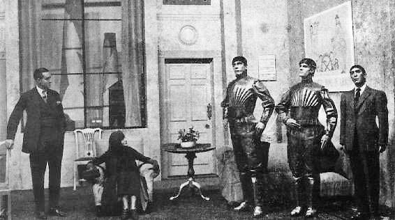
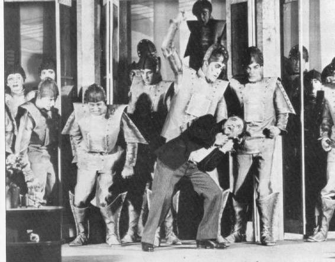
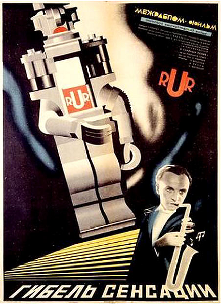
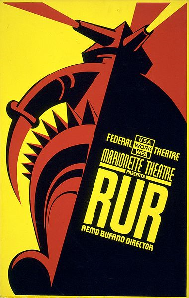

ハリィ・ドミン…………ＲＵＲ代表取締役
スラ………………………ロボット（♀）
マリウス…………………ロボット（♂）
ヘレナ・グローリィ……ＲＵＲ会長の娘
ガル博士…………………ＲＵＲ生理研究局主任
ファブリ技師……………ＲＵＲ技術担当主任
ハレマイヤ博士…………ロボット心理教育研究所所長
アルクイスト建築士……ＲＵＲ労働局主任
ブスマン部長……………ＲＵＲ営業部部長
ナナ………………………ヘレナの乳母
ラディウス………………ロボット（♂）
ヘレナ……………………ロボット（♀）
プリムス…………………ロボット（♂）
ロボットＡ
ロボットＢ
ロボットＣ
執事ロボット
その他適宜たくさんのロボット

第一幕 ＲＵＲロボット製造工場、社長室
第二幕 ヘレナの応接間（一〇年後の朝）
第三幕 同日、午後
終幕 ＲＵＲ生理研究局（一年後）

場所 ある孤島
時代 未来

［＃改ページ］
ナレーション 商品名「ロボット」。この商品は、当社が開発した人造人間であり、人間のあらゆる労働を肩代わりしてくれる、万能労働者です。また、一台あたりの値段も大変安くなっておりまして、何かとお困りの人件費の削減にもお役に立つこと間違いありません。ＲＵＲ、ロッサム世界ロボット製作所の「ロボット」を、ぜひお買い求め下さい。……
［＃改ページ］ ロッサム世界ロボット製作所社長室。下手に入口。正面奥には窓がいくつかあり、その向こうに立ち並んでいる工場の煙突が見える。上手には管理局の部屋がつづく。ドミンは大きな事務机を前にして、回転椅子に坐っている。下手の壁には汽船と鉄道の大きな路線図が数枚あり、上手の壁には印刷されたポスターが貼られている（内容は幕前のナレーションのようなもの）。壁のものとは対照的に、床には美しいトルコじゅうたんが敷かれ、ソファ、革製のアーム・チェア、書類整理用の棚がある。窓際の机の近くで、スラがタイプライターで手紙を打っている。
ドミン （口述している）いいか？
スラ はい。
ドミン イングランド、サウサンプトン、Ｅ・Ｍ・マクヴィッカー株式会社御中。「当社としましては、輸送中破損いたしました商品の保証はいたしかねます。積み込みの際、貴社の船がロボットに適さないことは、船長に忠告済みでありますので、当社が責任を負うところではございません。なにとぞご了承下さい。今度とも、ロッサム世界ロボット製作所をよろしくお願いします。」
スラはドミンがしゃべっている間、じっと動かず坐っていたが、しゃべり終わるとすぐタイプライターを打ち始め、数秒で終えると、完成原稿を引き抜く。
ドミン できたか？
スラ はい。
ドミン では次。アメリカ合衆国、Ｅ・Ｂ・ハイソン代理店御中。「ロボット五〇〇〇台の注文を確かに承りました。貴社の船をこちらにお回しになる際、復路用に往路と同量の石油、石炭を積み荷にお載せくださるようお願いします。その分の費用は、当方から一部、口座振込にてお支払いいたします。今後とも、ロッサム世界ロボット製作所をよろしくお願いします。」
スラが再び素早いタイプを繰り返す。
ドミン できたか？
スラ はい。
ドミン では次だ。ドイツ、ハンブルク、フリードリッヒ製作所御中。「ロボット一五〇〇台の注文を確かに承りました。」（電話が鳴り、取る）もしもし、社長室だ。ああ、確かに。そうだ、電報を打っておいてくれ。よろしく頼む。（電話を切る）ええと、どこまで行ったかな。
スラ 「ロボット一五〇〇台の注文を確かに承りました。」
ドミン ロボット一五〇〇台、一五〇〇台か。
マリウス登場。
ドミン 何事だ？
マリウス 女性が面会を希望しておられます。
ドミン 女性？ 誰だ。
マリウス 存じません。名刺をお持ちになりました。
ドミン （名刺を読んで）ああ、グローリィ会長の紹介か。通してくれ。
マリウス どうぞお入りください。
ヘレナ・グローリィ登場。
マリウス去る。
ヘレナ こんにちは、はじめまして。
ドミン どうもはじめまして。（立ち上がって）今日はどういったご用件でしょうか？
ヘレナ 取締役のドミンさんでいらっしゃいますね？
ドミン ええ。
ヘレナ お願いがあって参ったのですが――
ドミン グローリィ会長のご紹介とあらば、ぜひおうかがいいたします。
ヘレナ グローリィ会長はわたくしの父です。わたくし、ヘレナ・グローリィと申します。
ドミン お嬢様、わたくしどもとしてましても、会長のお嬢様をお迎えできるとは、たいへん光栄なことにございます。それに――
ヘレナ わたくしに、お引き取りくださいと言えないこともですか？
ドミン お掛けください。スラ、君は席を外しなさい。
スラ去る。
ドミン （腰かけて）お嬢様、どういったご用件でしょうか？
ヘレナ お願いと申しますのも――
ドミン わたくしどもの、人間を作るという工場をご覧になりたいのでしょう？ みなさんそうです。どうぞ、ご自由にごらんください。
ヘレナ わたくし、お断りになるかとばかり――
ドミン もちろん、工場内へ立ち入ることはできませんよ。それにお嬢様、ここへ紹介状を持っていらっしゃるのは、あなたばかりじゃございませんので。
ヘレナ では、あなたがたは誰にもお見せになると――
ドミン 限られたところだけですがね。人造人間の製造は、企業秘密なのです。
ヘレナ しかし、もしわたくしが――
ドミン そのことを知りたくて来たとすれば、ですか？ 今やヨーロッパはその話題で持ちきりですからね。
ヘレナ どうしてわたくしの言葉を最後までお聞きにならないの？
ドミン 失礼しました。では、何か違うことでもおっしゃりたかったのですか？
ヘレナ わたくしは、ただ――
ドミン 特例で、工場内の見学を許してくれないかどうか気になるのですね。いいでしょう、お嬢様。お見せいたします。
ヘレナ わたくしの考えがおわかりになるのですか？
ドミン みなさま同じですから。ただ、お嬢様には特別の配慮をいたす所存でございます。
ヘレナ ありがとうございます。
ドミン しかし条件がございまして、どんなにささいなことでも、一切他言はなさらないということで……
ヘレナ （立ち上がり、手を差し出す）ええ、わかりました。
ドミン ありがとうございます。あの、ヴェールをお上げいただけませんでしょうか。
ヘレナ そうですね。本当に会長の娘かどうか確かめなければなりませんものね。あの申し訳ありませんが――
ドミン はい？
ヘレナ お手を、お離しになってくださらないかしら？
ドミン （手を離す）失礼しました。
ヘレナ （ヴェールを上げる）ここでは、それほど慎重にならざるをえないのですね。
ドミン （ヘレナの顔をまじまじと見つめて）ええ――それは――もちろん。
ヘレナ いかがされました？ 何か、わたくしの顔にでも……
ドミン たいへんありがとうございました。そういえば、船旅はお楽しみになれましたか？
ヘレナ ええ。
ドミン 不慣れで大変ではありませんでした？
ヘレナ どうして？
ドミン それはその――お若いようでいらっしゃいますので。
ヘレナ すぐ工場へ行くようにはまいりませんの？
ドミン あ、いえ、可能です。その、二二とお見受けしますが。
ヘレナ 二二って、何がですの？
ドミン お歳のことです。
ヘレナ 二一です。でも、どうしてそんなことを？
ドミン それは――その――（熱心に）ここで、ごゆっくりしていただけるのでしょうか？
ヘレナ それは、これから拝見する工場次第です。
ドミン ちっ、工場様々だな。あ、いえいえ、すべてお見せいたしますとも、お嬢様。しっかりとね。お掛けになってください。
ヘレナ （カウチに向かっていって、坐る）お気遣い、どうも。
ドミン しかし前置きとして、このロボット技術の歴史を知っておきたくはありませんか？
ヘレナ そうですね、確かに。
ドミン （うっとりとヘレナに見入って、すらすらと話し出す）一九二〇年のことでした。偉大な生理学者である、ロッサム老人、もちろん当時はまだ若い研究者だったわけですが、その彼が、この孤島特有である海の生物を研究するために、ここへやってきました、まる。その時彼は、原形質という生命活動の本体、あるいはそれに準ずるものを、化学的な合成によって作れないかと実験を始めたのです。だが思いがけず、彼は発見しました。化学構造はまったく異なっているにもかかわらず、核と細胞質のように、生命活動の本体となりうる物質を。実に、一九三二年のことでした。ちょうどアメリカ発見から四四〇年にあたります。ふぅ。
ヘレナ それをみんな覚えていらっしゃるのですか？
ドミン ええ。生理学に明るくないもんで。続けてもいいですか？
ヘレナ どうぞ。
ドミン さて、お嬢様、それからロッサム老人は実験記録を書いたノートの中に、こんな端書きを残しています。「自然は、生命活動の本体をつくる唯一の方法を知っている。だが、自然のあずかり知らぬ、もっと簡単かつしなやかで、時間のかからない別の方法があった。生命がはぐくまれるもうひとつのプロセスが、今日、私によって発見されたのだ。」お嬢様、考えてもごらんなさい。この驚くべき言葉を、彼は食べたらまずそうなコロイド状の物質を前にして書いていたのですよ。試験管の前に坐り、その中から大いなる生命の木が育ち、そしてそこからすべての動物が生まれえる、昆虫のようなものから、人間に至るまで――そういうことを思いめぐらていたのです。しかし、人間と言っても、われわれとはまったく違う素材でできています。お嬢様、これですべてが完成したのです。
ヘレナ すべてが？
ドミン ええ。あとは試験管の中からその生命を取り出し、成長を促進し、器官やら骨やら神経やら何やらをつくる方法を見つければいいだけです。触媒とか酵素とかホルモンとかを見つければいいわけで――その、おわかりですか？
ヘレナ ええ、まぁ、あんまり。
ドミン 気にすることはありません。つまりは、そのエキスみたいなもので、作りたいものが作れるのですよ。ソクラテスと同等の脳を持ったメデューサとか、五〇メートルのみみずとか。でも、彼にはユーモアのかけらもなかったので、脊椎動物や、あるいは人間のようなものを作ろうとしました。彼の見つけた人工生命の種は、生命になりたいと叫んでいました。しかし、自分では合成や混合といったことができません。天然のアルブミンではどうにもならないのです。だから、彼はそれに取り組んだのです。
ヘレナ それって？
ドミン 自然を模倣することです。最初は人造犬を作ろうとしました。六、七年かかって、できたのは発育不全の子犬くらいで、それも数日で死んでしまいました。博物館でお見せしましょう。それからロッサム老人は、人間の製造に手をつけたのです。
ヘレナ これは誰にも言ってはいけないんですよね？
ドミン 世界中の誰一人にも。
ヘレナ あの、申し上げにくいことなのですが、そのことはもう、ヨーロッパ、アメリカ、どっちのどの教科書にも載っております。
ドミン ええ。しかし、教科書には何が載っていないかご存じですか？ ロッサム老人は頭がおかしいってことですよ。お嬢様、これは冗談ではありません。このことは胸にしまっておいてください。あの年寄りの変人は、本当に人を作ろうと思ったのです。
ヘレナ でも、あなたがたも人を作っているじゃありませんか。
ドミン お嬢様、あくまでも人間の「ような」ものです。ところが、ロッサム老人は文字通りのものを作ろうとしました。科学の力で、神を支配しようとしたのです。彼はまったくの唯物論者で、だからすべてをやりつくした。神はもはや必要ではない、ただそれだけを証明したかったようです。人体の組織については、何かご存じですか？
ヘレナ ほんの少しだけ。
ドミン 私も同じです。さて、彼は人体にあるものをすべて製造しようと考えた。博物館へ行ったときに、一〇年かかって作った試作品をご覧に入れましょう。それは人間になるはずのものでしたが、結局は三日生きただけでした。そのあと、老人の甥で、同じロッサムという名前の若者がやってきました。技術者でした。お嬢様、彼はものすごい男でしてね、あの老人のコロイドから作ったものを見るなり、こう言いました。「人間を作るために一〇年もかかってどうするんだ。自然より早く作れないんじゃあ、店じまいでもした方がいいな。」そうして、ロッサム青年は人体組織の勉強を始めました。
ヘレナ 教科書にはそんなこと書いてありませんでした。
ドミン 教科書なんて、金を払って載せた広告と、くだらんことが載ってるだけですよ。教科書は、二人の偉大なロッサムが共同研究したなんて言ってますが、あれはみんなおとぎ話です。二人はいつもひどい口論をしていました。老人は本当の人間を創ろうとしましたが、青年はちょっと賢い作業機械のようなものを作ろうとしたのですよ。老人は工業にこれっぽちも興味がなかったので、冒涜につまらぬ時間を費やしていればいいさ、とロッサム青年はついに老人をどこかの研究室に閉じこめてしまい、自分は技術者の観点から研究を始めてしまいました。老人は青年をのろい、生きている間にもう二体、科学の化け物みたいな駄作を作りましたが、ある日、研究室で老人が死んでいるのが発見されました。話はそれだけです。
ヘレナ 青年の方はどうなったのですか？
ドミン そうですね、普通、人体組織を詳しく見れば、誰でもすぐに人間の複雑さに気がつくし、よい技術者なら、これをもっと簡単に作れるはずです。そんなふうにして、ロッサム青年は組織を綿密に調べ、取り除けるものや、簡単にできるものがないが探した。要するに――あの、お嬢様、退屈していらっしゃらないでしょうか？
ヘレナ 大丈夫です。あなたは――いえ、とても面白いですね。
ドミン そこで、ロッサム青年はこう思ったのです。「人間というものは、楽しんだり、ピアノを弾いたり、散歩が好きだったりするものなのだ。そして事実、本来こういう不必要なことでも色々やってしまうのだ。」
ヘレナ うーん。
ドミン 不必要というのは、つまり、えーと、編んだり、計算したり、そういう生産的なことをするときには、という意味です。ピアノはおやりになりますか？
ヘレナ ええ。
ドミン 素晴らしい。しかし、作業機械はピアノを弾いたり、楽しんだり、色んなことをする必要はないのです。ガソリンエンジンには飾りといったものは不要ですからね、お嬢様。それに、人工的に労働者を作るということは、ガソリンエンジンを作ることと同じです。その製造は至極簡単にしなければなりませんし、その製品は実用的に見て、最高のものでなければなりません。あなたは、どういう労働者が、実用的に見て最高だとお考えになりますか？
ヘレナ は？
ドミン どういう労働者が、実用的に見て最高だとお考えになりますか？
ヘレナ たぶん、正直で勤勉な人だと思いますが。
ドミン いいえ、もっとも安上がりなやつですよ。経費もかからないやつ。ロッサム青年は、経費が最低限におさられる労働者を開発したのです。それには簡単化するのが不可欠でしたから、労働力向上に直接役立たないものはすべて切ってしまいました。人の値段を上げるようなものは、すべてね。ですから、人を切り捨てて、「ロボット」という商品労働者を作ったのです。お嬢様、ロボットは人ではありません。機械としては、我々より完璧であり、高度に発達した知性を持っていますが、心を持っておりません。
ヘレナ 心を持っていないとは、いったいどういうことでしょうか？
ドミン ロボットの内部が、いったいどうなっているかご覧になったことは？
ヘレナ いいえ。
ドミン 整然として、簡単なものです。ある意味、芸術作品ですよ。その中にあるものは少ないが、すべて完璧な秩序の上に成り立っている。技術者の作り出したものの方が、自然の作り出したものよりも、技術的に言って完成度が高いのです。
ヘレナ でも、人は神の創りたもうたものと言われています――
ドミン だからまずいのです。神は現代技術について何も知らなかった。ロッサム青年が、それから神のまねごとをしようとしたなんて、信じられますか？
ヘレナ どういう意味ですか。
ドミン 彼は、スーパーロボットを製造し始めたのです。巨人労働者――三メートル後半はあるものを作ろうとした。しかし、そいつらは失敗作だったんですよ、いいですか、失敗作です。
ヘレナ 失敗作――
ドミン ええ、わけもわからず、手足がもげていったのです。どうも我々の地球は巨人には小さすぎたようです。ですから、わたくしどもとしましても、今は普通の大きさで、人間が最終的に進化した、この高度な形態のロボットだけを作っています。
ヘレナ 地元で、初期型のロボットを見たことがあります。町議会が買った――いえ、その、仕事のために雇ったんです。
ドミン 買ったんですよ、お嬢様。ロボットは売買されるのです。
ヘレナ 彼らは道を掃除するために雇われて、わたくしも現場を見たことがあります。非常に不自然で、物も言いませんでした。
ドミン ロッサム世界ロボット製作所は統一規格のロボットを作っているわけではありません。精度が高いのから、低いのまで色んな等級のものがございます。最高等級のものなら、二〇年は生きますよ。（ベルを鳴らして、マリウスを呼ぶ）
ヘレナ それから死ぬのですか？
ドミン ええ、消耗されるのです。
マリウス登場。
ドミン マリウス、肉体労働型ロボットをサンプルとして連れてきなさい。
マリウス去る。
ドミン 両極端な例をお見せしますよ。この第一等級のものは比較的安価で、大量生産されています。
マリウスが二体の肉体労働型ロボットを連れて再び登場。
ドミン ご覧ください。小型のトラクターと同等の力があります。並みの頭脳も保証されています。よし結構だ、マリウス。
マリウスはロボットを連れて去る。
ヘレナ ロボットって、とても不自然なものなんですね。
ドミン （ベルを鳴らす）うちの新人タイピスト、ご覧になりました？（ベルを鳴らして、スラを呼ぶ）
ヘレナ いいえ、まだ会ってませんが。
スラ登場。
ドミン スラ、お嬢様に挨拶しなさい。
ヘレナ はじめまして。こんな人里離れたところにいて、とても憂鬱になっていることでしょうね。
スラ わかりません、お嬢様。
ヘレナ 出身はどちらなの？
スラ この工場です。
ヘレナ ああ、ここで生まれたのね。
スラ ここで作られたのです。
ヘレナ えっ？
ドミン （笑いながら）スラはロボットですよ、最高等級の。
ヘレナ ご、ごめんなさい。
ドミン スラは怒りませんよ。ここをご覧ください、お嬢様。わたくしどもの作った人工皮膚です。（スラの顔の皮膚を触る）どうぞ、顔に触れてみてください。
ヘレナ いえ、そんな。
ドミン 我々と違う素材でできているなんて、わからないでしょう？ スラ、見せてやりなさい。
ヘレナ やめてください！
ドミン じゃあスラ、お嬢様とお話でもしてあげなさい。
スラ お坐りください。
ヘレナ坐る
スラ 船旅はお楽しみになりましたか？
ヘレナ そ、そうね、結構でした。
スラ お嬢様、アメーリア号でお帰りになるのは、よろしくないですよ。気圧計も下がり調子ですので、ペンシルヴァニア号をお待ちになってはどうでしょう。いい船で、馬力もあります。
ドミン 速さはどのくらいだ？
スラ 二〇ノット、五万トン。最新の船ですよ、お嬢様。
ヘレナ ええ、そのようね。
スラ 定員は一万五〇〇〇、船長はハーピィ、ボイラーはやっつあって――
ドミン よろしい、スラ。お前のフランス語を聞かせてくれないか。
ヘレナ フランス語ができるの？
スラ 四ヵ国語できます。ディア・サー、ムシュー、ゲーター・ヘア、ツチェヌイー・パネ、と書くことができます。
ヘレナ （飛び上がって）そんな、バカにしないで！ スラはロボットじゃないんでしょう？ スラはわたくしと同じ女の子です。スラ、あなたも人が悪いのね。どうしてこんな悪ふざけをしたの？
スラ わたしはロボットです。
ヘレナ いいえ、そんなの嘘です。ただ宣伝のためにやらされてるだけなんでしょう？ スラ、あなたはわたしと同じ女の子なんでしょう？
ドミン 申し訳ありません、お嬢様。スラはロボットなのです。
ヘレナ 嘘です！
ドミン え？ （ベルを鳴らす）仕方ありません、お嬢様。それでは実際に納得していただくしか――
マリウス登場。
ドミン マリウス、スラを解剖室へ連れていって、こいつをすぐ切開するように言ってくれ。
ヘレナ 何ですって？
ドミン 解剖室へ連れていくんです。切開しましたら、見に行ってみましょう。
ヘレナ やめて！
ドミン しかしですね、あなたは嘘をついてるとおっしゃった。
ヘレナ そんな、彼女を殺させたいのですか？
ドミン 機械に殺されるも殺されないもありません。
ヘレナ 怖がらないで、スラ。わたくしは行かせませんからね。スラ、行ってちょうだい、みんな、いつもこんなに冷たくするの？ 我慢する必要なんてありません、スラ。しなくていいんです。
スラ わたしはロボットです。
ヘレナ そんなこと関係ありません。ロボットだって、わたしたちと同じ。スラ、あなたは自分をバラバラにされてもいいの？
スラ 構いません。
ヘレナ そんな、死ぬのは怖くないの？
スラ わかりません、お嬢様。
ヘレナ 連れていかれたら、どうなるかわかっているの？
スラ はい、わたしは動かなくなるでしょう。
ヘレナ なんてひどい！
ドミン マリウス、お嬢様に自己紹介しなさい。
マリウス ロボットのマリウスです。
ドミン スラを解剖室に連れていくか？
マリウス はい。
ドミン スラを気の毒に思うか？
マリウス わかりません。
ドミン スラはどうなるかね？
マリウス 動かなくなるでしょう。そして粉砕機に入れられます。
ドミン マリウス、それは死ぬことだが、君は死ぬことは怖くないのか？
マリウス はい。
ドミン ほら、お嬢様。ロボットは生きることに執着しないのです。楽しむということも知りません。そこいらにある雑草以下の存在なのです。
ヘレナ お願い、やめて。もう向こうへやってください。
ドミン マリウス、スラ、下がっていい。
スラとマリウス去る。
ヘレナ なんて、なんておぞましいことをなさっているのですか！
ドミン いったい何をおぞましいと言うのです。
ヘレナ わかりません。でも、そうなんです。どうして彼女はスラという名前なのですか？
ドミン いい名前でしょう？
ヘレナ 男の名前です。スラはローマの将軍の名前なんです。
ドミン ああ、わたくしどもはてっきり、マリウスとスラは恋人同士かと。
ヘレナ マリウスもスラも将軍で、お互い戦ったんです――詳しい年代は忘れましたが。
ドミン 窓のところへ来てください。
ヘレナ えっ？
ドミン こちらへ。何が見えますか？
ヘレナ レンガを積む人たちが。
ドミン ロボットです。わが社の労働者はみんなロボットです。では下の方には何が見えますか？
ヘレナ 事務所、ですか？
ドミン 経理部です。その中では――
ヘレナ 事務員がたくさん働いている。
ドミン ロボットです。わが社の事務員はみんなロボットです。ではその工場を見てみると――
工場からサイレンが聞こえてくる。
ドミン 正午だ。わが社ではサイレンが欠かせませんで、というのも、ロボットはいつ仕事をやめていいかわからないからなんです。二時間後に、攪拌槽をお見せしますよ。
ヘレナ かくはんそう？
ドミン ペーストをかき混ぜるすりこぎみたいなものですよ。一回一時間でロボット一〇〇〇体分の原料を混ぜることができます。他にも肝臓や脳とかをこしらえるタンクもあります。骨工場もご覧に入れましょう。それから、紡績機もいいですね。
ヘレナ 紡績機？
ドミン ええ、神経や血管をつむぐのです。一度に何キロメートルもの消化管が流れていくんですよ。それからそれぞれの部品を流れ作業で組み立てて、うまく動くかどうか製品チェックをし、そして教育をほどこします。これはただ教えられたことを覚えるだけで、新しいことを思いつくというようなことはありません。本当に何でも覚えるんです。たとえば二〇巻の百科事典だと――
ヘレナ あの、何か別の話をするわけにはいきませんか？
ドミン どうやら、その方がよさそうですね。ここには一〇万体のロボットをのぞけば、ほんの一握りの人間しかいないもので、特に女性は一人もおりません。それに来る日も来る日もずっと工場のことしかしゃべらないもので――まるで、何かにとりつかれたみたいにね、お嬢様。
ヘレナ 申し訳ありません、疑ったりなんかして。
ドアをたたく音
ドミン 入りなさい。
下手から、ファブリ技師、ガル博士、ハレマイヤ博士、アルクイスト建築士登場。
ガル博士 お話中のところ、失礼ではございませんでしょうか？
ドミン 入れ入れ。お嬢様、こちらはアルクイスト、ファブリ、ガル、ハレマイヤです。この方は、グローリィ会長のお嬢様だ。
ヘレナ はじめまして。
ファブリ なんてありがたい――
ガル博士 光栄であります。なんと――
アルクイスト よくおいでくださいました、お嬢様。
ブスマンが下手から駆け込んで登場。
ブスマン どうも、これは何事ですか？
ドミン まあ入れ、ブスマン。この男はブスマンといいます、お嬢様。この方はグローリィ会長のお嬢様だ。
ブスマン これはこれは、ご機嫌うるわしゅう。お嬢様、あなた様のご到着を、新聞に一報してよろしいでしょうか？
ヘレナ それはお控えいただけますか。
ドミン お嬢様、おかけください。
ブスマン 失礼して――（アームチェアを引き寄せる）
ガル博士 どうか――
ファブリ ぼくも――
アルクイスト 船旅はいかがでしたか？
ガル博士 こちらでは、ごゆっくりなさるのですか？
ファブリ お嬢様、この工場をどう思いました？
ハレマイヤ アメーリア号で来たとか。
ドミン みんな少し黙れ、お嬢様の話を聞こうじゃないか。
ヘレナ （ドミンに向かって）いったい何をお話すればいいのですか？
ドミン お好きなことで結構ですよ。
ヘレナ その――素直に申してよいのですか？
ドミン ええ、もちろんですとも。
ヘレナ （少しためらってから、必死の決意で）正直に答えてください、自分たちの扱いが、あまりにもひどいと思ったことはないのですか？
ファブリ えっと、誰に扱われるんですか？
ヘレナ 誰って、みんなにです。
アルクイスト 扱いとは何ですかな？
ガル博士 そうお考えになった理由が知りたいですな。
ヘレナ あなた方は、もっといい人生を送りたいとは思わないのですか？
ガル博士 その答えは、あなたがどういう意味でそれを言っているのかによりますな、お嬢様。
ヘレナ わたくしは、とってもひどいものだと思っております。最低のことだと。（立ち上がって）ヨーロッパ全土であなた方への扱いが話題になっています。だからわたくしはここに来て、自分で確かめようと思ったのです。ところが、思っていたのより何千倍もひどかった。どうして、この現状に耐えられるのです？
アルクイスト 耐えるって、何にだね？
ヘレナ だって、だって、あなた方もわたくしたちや、ヨーロッパの誰とも、いや世界中の誰とも同じ、生き物なんです。こんな環境で生きなきゃいけないなんて、尊厳もなにもあったもんじゃありません！
ブスマン まぁ、尊厳くらいはありますよ、お嬢様。
ファブリ いや、間違ってるとも言えませんよ。確かにここの生活はジャングル並みにひどい。
ヘレナ ジャングルどころじゃありません。その、皆さんのことを同志と呼んでもいいですか？
ブスマン どうぞどうぞ。
ヘレナ 同志の皆さん、わたくしはここに、会長の娘として来たのではありません。人道連盟を代表して来たのです。同志の皆さん、人道連盟は今、二〇万人を超える人が会員になっています。二〇万人はあなた方の味方です。あなた方を援助したいのです。
ブスマン 二〇万人！ お嬢様、こりゃ相当ですね。結構なことですよ。
ファブリ 僕の言ってるとおりでしょう、古きよきヨーロッパに勝るものなし、って。だって、僕たちのことだって忘れずに、ちゃんと援助してくれるっていうんだから。
ガル博士 援助。それはたとえば、劇場といったものですかな？
ハレマイヤ オーケストラかもしれんよ。
ヘレナ それ以上のものです。
アルクイスト あなた自身かな？
ヘレナ わたくしのことなんてどうでもいいのです。必要な限り、ここにいるつもりですが。
ブスマン やった、こんなうれしいことはないですよ。
アルクイスト ドミン、このお嬢様のために、最上の部屋を用意しようと思うんだが。
ドミン ちょっと待て。さっきから気になってたんだが、さっきからお嬢様はどうもロボットとお話をしていると思ってらっしゃるようなんだ。
ヘレナ ええ、そうじゃないのですか？
ドミン 申し訳ありません、この者たちは、わたしたちと同じ人間なのです。
ヘレナ ロボットじゃない？
ブスマン ロボットじゃないですよ。
ハレマイヤ ロボットか、ふん！
ガル博士 それは勘弁していただきたい。
ファブリ お嬢様、誓って、ぼくたちはロボットじゃありません。
ヘレナ （ドミンに向かって）でも、あなたはさっき、ここの事務員はみんなロボットだっておっしゃったじゃありませんか。
ドミン ええ、社員はそうなのですが、経営陣はそうではないのです。お嬢様、お許しください。彼はファブリ、ＲＵＲの技術担当主任をしています。ガル博士、生理研究局の主任です。ハレマイヤ博士、ロボット心理教育研究所の所長です。ブスマン、彼は経営部の部長をやっています。最後にアルクイスト、ＲＵＲ労働局の主任です。
アルクイスト わしはただの大工にすぎんよ。
ヘレナ 皆さん、失礼しました。その――その――わたくし、ひどいことをしてしまったようで。
アルクイスト お嬢様、気になさらんでください。おかけになって。
ヘレナ わたくし、だめな小娘でしょう？ 次の船で送りかえしてください。
ガル博士 なんてことはありません。あなたを送りかえす必要がどこにあるのです。
ヘレナ おわかりだと思いますが、わたくし、ロボットをけしかけようとしたのですよ。
ドミン お嬢様、今までここには何百という救世主やら預言者がやってきていますし、毎便そんな輩がやってきているのです。宣教師、無政府主義者、救世軍などなど。世界中にどれだけ宗教があって、どれだけバカがいるのか、その数たるや驚くほかありません。
ヘレナ それで、その人たちがロボットとお話になることを認めるのですか？
ドミン そうさせてはいけない理由なんてどこにあるのです。ロボットは何でも覚えますが、でもそれだけです。人のいったことに笑うこともありません。本当に、信じがたいことですが。お嬢様、もし興味がおありなら、ロボットの倉庫へお連れしますよ。だいたい三〇万体はあるんじゃないでしょうか。
ブスマン 三四万七〇〇〇体です。
ドミン ありがとう。別に、ロボットに向かって何を言ってくださっても構いません。聖書を読んでもいいですし、九九の表を読んでもかまいません。お好きなように。人権について語るっていうのもいいですね。
ヘレナ でも、ほんの少しでもロボットに対して愛があれば――
ファブリ お嬢様、無理ですよ。ロボットほど、好き嫌いと縁遠いものはありません。
ヘレナ じゃあ、ロボットを何のために作っていらっしゃるのですか？
ブスマン あっはっは。こりゃ傑作ですよ。何のためにロボットを作るですって？
ファブリ お嬢様、労働のためです。一体のロボットは、二人半の労働者と置き換えることができます。人間という機械は、ひどく不完全なものなんですよ、お嬢様。遅かれ早かれ、なくならなければならないものだったんです。
ブスマン お金がかかりすぎたんですよ。
ファブリ それに効率が悪かった。現代技術の求めるレベルについていけなくなった。自然は、現代の要求する労働量を満たすことができなかった。たとえば、技術的な見方でいうと、子どもである期間というのは、まったくの無駄です。時間の無駄遣いです。それに――
ヘレナ もう結構です！
ファブリ 申し訳ありません。あの、ところで、その連盟――人道連盟というのは、そもそも何が目的なんですか？
ヘレナ 目的というのは――ロボットを保護すること、つまり――ロボットの扱いを向上させることです。
ファブリ 悪くありませんね。機械っていうのは、適切に扱わなきゃいけない。ぼくとしても、それに賛成します。故障した商品ってのは嫌いなんですよ。お嬢様、どうかぼくたちも協賛会員、いや一般会員として、いやむしろ設立会員として参加させてください。
ヘレナ いえ、どうもわたくしの言っていることがおわかりにならないようです。わたくしどもの本当の願いは――ロボットを解放することなのです。
ハレマイヤ どういうふうになったら、それは実現するのかね。
ヘレナ その、彼らが――人間と同じように扱われるようになったら、です。
ハレマイヤ ふーん、じゃあ投票でもさせろとか、ビールを飲ませろとか、人間に命令できるようにさせろとでも言うのかね。
ヘレナ どうしてビールを飲んじゃいけません？
ハレマイヤ その上、やつらに賃金を払えとでも言うのか？
ヘレナ もちろんです。
ハレマイヤ はん！ バカバカしい。やつらが金を持って、何をするっていうんです。
ヘレナ それは――買うんです。必要なものとか――楽しむものとか。
ハレマイヤ たいそうご立派な意見ですな、お嬢様。だが残念なことに、ロボットは楽しむという概念がないんですよ。ああ、やつらは何を買ってよいやら。食べ物だって、パイナップルでも、藁でも、何を食わせても一緒。味覚ってものがないんだからな。それにお嬢様、やつらは何にも興味がわかないもんでしてね、あのバカのロボットどもが笑ったところなんて、誰も見たことないくらいだよ。
ヘレナ どうして……どうしてもっと幸せにしてあげられないんですか？
ハレマイヤ それはできない相談だな、お嬢様。やつらはただの労働者なんだ。
ヘレナ でも、しっかりした知性があります！
ハレマイヤ 確かに、ひどく頭はいい。でもそれだけだ。自分の意思というものがない。情熱もなければ、心もないんだ。
ヘレナ 愛は？
ハレマイヤ 愛？ もちろんないね。ロボットは愛さない。自分でさえな。
ヘレナ 反抗もしないのですか？
ハレマイヤ 反抗？ さあね。もっとも、あるにはあるようだが。
ヘレナ えっ？
ハレマイヤ どうってことない。たまに頭がおかしくなるだけのことだ。ときどき、てんかんみたいなのを起こすんだよ。俺たちはロボットのけいれんって呼んでるけどな。突然、持ってるものをみんな下に叩きつけると、立ったまま、歯をぎしぎしいわせるんだ――そうなりゃ、あとは粉砕機行きだ。どっからどうみても、機械の故障だな。
ドミン 不良品は、廃棄されなければなりません。
ヘレナ 違います、それは心です！
ファブリ 物心ついたら、誰でも最初に歯をぎしぎし言わせるっていうんですか？
ヘレナ それが彼らなりの反抗なのですよ。きっとそれが、彼らに心の葛藤があるという証拠なんです。ああ、彼らにちゃんとした思想を教えてさえいれば！
ドミン それはいずれ克服できます、お嬢様。ガル博士が今取り組んでいるのも――
ガル博士 そんなことやっておらんぞ、ドミン。現在は、痛覚神経の実験をやっているんだ。
ヘレナ 痛覚神経？
ガル博士 ええ、ロボットは肉体的な痛みを実際に感じることはありません。ご存知のとおり、ロッサム青年はロボットに非常に限られた神経系しか与えなかったのです。自分どもは、ロボットに痛みを与えねばなりません。
ヘレナ どうして痛みを与えなければならないのです？
ガル博士 工業上の理由です、お嬢様。ロボットは痛みを感じないせいで、ときどき自分を傷つけてしまいます。手を機械の中に入れたり、指を折ったり、頭を打ち付けたり、何をしてもロボットにはどうでもいいことなのです。だから痛みを与えることが必要になります。怪我への自動防衛です。
ヘレナ 痛みを感じるようになれば、幸せになるでしょうか？
ガル博士 その反対です。しかし、技術的には完全に近づきます。
ヘレナ どうして、ロボットに心を作らないのですか？
ガル博士 自分どもの力では無理です。
ファブリ それに、興味ありませんから。
ブスマン しかも、そうすれば生産コストが高くなってしまうんですよ。お嬢様、そんなことご免こうむりたいです。あたしたちは安価で出しているのです。ちゃんと服を着せたもので一五〇ドル、これが一五年前には一万もしたんですよ。五年前まで、あたしたちはロボットのために服を買っていました。けれども、今では自前の織物工場があって、他の工場より五倍も安く出しさえしているのです。お嬢様、布一メートルにどれくらいお支払いですか？
ヘレナ 存じません、忘れてしまいました。
ブスマン おやおや、それなのに人道連盟を設立なさりたいんですか？ お嬢様、今やたった三分の一です。今では何でも価格が三分の一になって、将来はどんどん、どんどん下がります。
ヘレナ それが、どうしたっていうんです。
ブスマン なんとおいたわしや、お嬢様。それは人件費がおさえられたということなのです。ロボットが餌代込みで、一時間四分の三セント。これは非常に大事なことですからね、ね。アメリカの栗の木みたいに、次々に工場が消えてなくなるか、製造コストをおさえるためにロボットを買うか、二つに一つ。
ヘレナ そうやって、労働者をお払い箱にしているのですね。
ブスマン そうなるでしょうね。しかしこっちときたら、五〇万体の熱帯仕様ロボットをアルゼンチンの大草原で小麦を作るためにダンピングしているわけです。パン一ポンドをいくらでお買いになるか、よろしかったらお教えくださいますか？ ん？
ヘレナ ぞ、存じません。
ブスマン じゃあ教えてしんぜましょう。古きよきヨーロッパでは、今や二セントです。パン一ポンドが二セントですよ、そんなこと人道連盟はちっともご存知じゃないでしょう。お嬢様、あなたは物が高いということをご存じない。さぁ、五年したら、ご約束しますよ――
ヘレナ 何をですか？
ブスマン すべてのものの値段が今の十分の一になることを。そして、五年たてば、小麦でも何でも、すべての心配は不要になるのです。
アルクイスト そうして、世界中の労働者が職を失うのか。
ドミン ああ、アルクイスト、そのとおりだ。お嬢様、そうなるのです。しかし一〇年もすれば、ロッサム世界ロボット製作所が小麦や布地など、何でも売り出すようになります。そうすれば物の価格なんてものは、実質なくなってしまうでしょう。貧困もなくなる。労働もすべて生きた機械がやってくれる。誰しも気兼ねなく自由になり、労働という我々にふさわしくないものから解放されるのです。すべての人間が、自己を完成するためだけに生きられるでしょう。
ヘレナ そうなんですか？
ドミン もちろんです。もはや運命ですよ。そして人間が人間に隷属することも、人間が物の奴隷になることも終わりを告げるでしょう。無論、その前におそろしいことがおこるでしょうが、それは避けられません。しかし、もうパンを得るために命をなげうったり、暴力をふるう必要もありません。ロボットは物乞いの靴ですら磨くでしょうし、家の中にベッドをも用意するでしょう。
アルクイスト ドミン、ドミン。お前さんの言うことは、まるで完全無欠の楽園みたいじゃないかね。昔は奉仕の中にもよいことはあったし、謙虚さの中にも何かすばらしいものがあった。一汗かくことや、疲れることにも何かしら美徳があったんだ。
ドミン たぶんね。でも世界を変えることによって失ったものを、考慮するわけにはいかないよ。人間は自由で何にも束縛されてはいけないんだ。自己を完成させること以外のどんな目的も、どんな努力も、どんな心配もすることはない。人は物にも人にも奉仕する必要はない。人は製品を作る機械でもなければ装置でもない。人は創造主となるのだ。
ブスマン ああ神々しい。
ファブリ かくありたまえ。
ヘレナ わたくしは、いったい何を信じればいいんでしょう――いったい――何を――
ガル博士 お嬢様、あなたはまだ若い。いずれわかることでしょう。
ハレマイヤ そのとおりだ。お嬢様、昼食でも一緒にいかがかね？
ガル博士 それはいい。ドミン、我々を代表して聞いてくれ。
ドミン お嬢様、我々のお願い、聞いてくださいますか？
ヘレナ でも、わたくしが何のために来たのかご存知のはず――
ファブリ 人道連盟のためですよね、お嬢様。
ヘレナ ええ、そうです。だから――
ファブリ それで問題ありません。お嬢様、五分ほど失礼いたします。
ガル博士 お嬢様、自分も失礼して。
ブスマン すぐですよ。
ハレマイヤ 俺たちみんな、あんたが来てうれしいんだよ。
ブスマン きっかり五分したら戻ります。
ドミンとヘレナを残して、全員飛び出していく。
ヘレナ みなさん、何をしに出ていらしたのですか？
ドミン 料理ですよ、お嬢様。
ヘレナ 何を料理なさるんです？
ドミン 昼食です。我々の料理は普段ロボットが作ってくれているのですが、彼らは味覚がないので、その、あんまりね――ハレマイヤの網焼きは上手ですし、ガルはいろいろソースが作れます、またブスマンはオムレツのことならなんでも知ってるんですよ。
ヘレナ ごちそうね！ でも、あの人は何ができるんですか――あの大工さんは。
ドミン アルクイストですか？ 何もできません。テーブルに並べるだけです。えーと、ファブリが何か果物を持ってきてくれると思います。わたくしどもの料理はとても質素なんです、お嬢様。
ヘレナ あの、わたくしからお伺いするのもなんですが――
ドミン ああ、わたしからもお伺いしたいことがあるのです。（時計を見て）五分か。
ヘレナ あなたがお聞きになりたいことって何ですか？
ドミン いえいえ、お嬢様の方からどうぞ。
ヘレナ バカなことだとお思いになるかもしれませんが、その、なぜ女性のロボットをお作りになるのでしょうか――だって――その――
ドミン ロボットには性別なんて関係ないのに、ですか？
ヘレナ はい。
ドミン それは一定の需要があるからですよ。女中とか、販売員とか、速記要員として。みんなその方が慣れてるでしょう？
ヘレナ でも――でも、教えてください。ロボットの男と女はお互いに――何も、何も――
ドミン お互いに何も感じませんよ、お嬢様。お互いに好きになるとか、そんなことはまったくありません。
ヘレナ そんなおそろしい！
ドミン どうしました？
ヘレナ そんな、不自然です。それに、いったい気味悪がったらいいのか、拒絶すればいいのか、それとも――
ドミン 同情したらいいのかわからないというのですね？
ヘレナ ええ、そうかもしれません。ところで、あなたは何をお尋ねになりたかったのですか？
ドミン わたしが伺いたかったのは、ヘレナさん、その、わたしと結婚してくださいませんか？
ヘレナ は？
ドミン わたしの妻になってください。
ヘレナ 冗談はやめてください！
ドミン （腕時計を見る）あと三分です。わたしがだめなら、他の五人のうちの誰かと。
ヘレナ おっしゃってることの意味がわかりません！
ドミン いずれにせよ、全員があなたに告白するのですから。
ヘレナ いったい、どういう神経をしているのですか？
ドミン 申し訳ありません、お嬢様。みんな、あなたに夢中なんです。
ヘレナ やめてくださらない？ わたくし、もう行かないと。
ドミン ヘレナさん、あなたはそんな冷たい人じゃないはずです。
ヘレナ でも、六人全員と結婚なんてできません！
ドミン いえいえ、誰か一人でいいのです。わたしがだめなら、ファブリをお願いします。
ヘレナ いやです。
ドミン ガル博士は？
ヘレナ 誰であろうとだめなものはだめです。
ドミン （再び腕時計を見て）あと二分。
ヘレナ ここに来る女性なら誰でもいい、そんなふうにお考えになってるんでしょう！
ドミン ヘレナさん、ここには数え切れないくらいやってきましたよ。
ヘレナ お若い方が？
ドミン ええ。
ヘレナ どうして誰とも結婚しなかったのですか？
ドミン 今まで理性を失ったことなんてなかったんです。でも今日、あなたがそのヴェールを上げたときから――
ヘレナ、顔をそむける。
ドミン あと一分。
ヘレナ きっぱり申しますが、わたくしはあなたなんか好きじゃありません。
ドミン （両手をヘレナの両肩に置いて）あと一分です。わたしの目をじっと見て、嫌悪感たっぷりに「いやです」と言ってくだされば、わたしもあなたをあきらめましょう――それとも――
ヘレナ、ドミンを見る。
ヘレナ （顔をそむけて）あなた、どうかしてます！
ドミン ヘレナさん、男は誰でも少々どうかしてるものですよ。むしろ、男とはそうでなければいけません。
ヘレナ お願い――お願いですから――
ドミン どうしました？
ヘレナ 手を離して、痛い！
ドミン さぁ、答えるんだ、ヘレナ。さもないと――
ヘレナ ドミンさん――やめて――やめてください！
ドミン、ヘレナを抱きしめてキスをする。
ドアをたたく音。
ドミン （ヘレナを離して）どうぞ！
ブスマン、ガル、ハレマイヤ登場。三人はエプロンを着用している。ファブリは花束を持って、アルクイストはわきの下にナプキンを持っている。
ドミン そっちはもう終わったか？
ブスマン はい。
ドミン こっちもだ。
一瞬、男たちは呆然と立ち尽くしたが、すぐにドミンの言葉を理解して駆け寄り、ヘレナとドミンを祝福する中、幕が下りる。
［＃改ページ］ 場所はヘレナの応接間。上手手前に緑色のドア、奥に音楽室へ続くドアがあり、下手にはヘレナの寝室のドアがある。中央奥には窓が並んでいて、そこから海と港が見える。いろんなものが乗っている机と、ソファがひとつに、椅子がいくつか。書き物机の上には電灯があり、下手に暖炉。ソファの後ろの小さな机には、小さな読書灯が乗っている。この応接間は全体的に現代風（注：公開当時は一九二〇年代）で、女性の部屋であることが一目でわかるような感じにしておく。これは第一幕から一〇年後が舞台である。
ドミン、ファブリ、ハレマイヤが上手手前のドアから忍び足で登場。三人とも植木鉢を持っている。
ハレマイヤ （植木鉢をおろして、下手のドアを指差す）まだ寝てるな？ 寝てたら、あれのことなんか知らないよな。
ドミン ああ、知らないと思うよ。
ファブリ （植木鉢を書き物机の上に置いて）今日は何事も起こらなければいいんですけど。
ハレマイヤ 頼むからその話はやめてくれ。おい、ハリィ、このきれいなシクラメン、なんだかわかるか？ 俺の作った新種なんだ――シクラメン・ヘレナエ。
ドミン （窓の外を見ながら）船はまだ来ないか。非常にまずいことになったぞ。
ハレマイヤ 静かにしろ。聞こえちまったらどうするんだ。
ドミン まぁ、ウルティムス号が間に合ったからよしとするか。
ファブリ 本当のところはどうなんですか、今日あたり――
ドミン わからんよ。花の方はどうなんだ？
ハレマイヤ これは新種のプリムラ。これは新種のジャスミンだ。俺は花を実にすばやく育てる方法を見つけたんだ、すごいだろ。俺のこの選択、感動的だね。来年にはもっとびっくりするやつを用意してやるよ！
ドミン 何――来年？
ファブリ せめてル・アーヴル港の様子さえわかれば――
ドミン 静かに。
へレナ （下手から呼ぶ）ナナ！
ドミン 彼女が起きた。逃げるぞ。
全員、忍び足で上手奥のドアへ去る。
ナナ、上手手前のドアから登場。
ナナ あのうす汚いゴミめ！ 異教徒どもが！ もし許されるなら――
ヘレナ （ドアのところで後ろ向きになって）ナナ、こっちへ来てボタンをとめて。
ナナ はいはい、すぐ行きますよ。（ヘレナの服のボタンを留める）まったく、けだものだね、ありゃあ！
ヘレナ 誰のこと？
ナナ ほら、背中、ちゃんと背中を見せてくれなきゃ、ボタンは留められないよ。
ヘレナ 今、何に文句を言ってたの？
ナナ 化け物のことですよ、あの異教徒――
ヘレナ ロボットのこと？
ナナ そんな名前、口にしたくないね。
ヘレナ 何があったっていうの？
ナナ うちにいたやつがあれにかかったんだよ。応接間にあった彫刻や絵をぶっ壊しだしたんだよ、歯をがたがた言わせて、口から泡を吹いて――ありゃあ、いかれてるよ。けだもの以下さ。
ヘレナ うちの誰があれにかかったの？
ナナ あー、ちょい待ち――あいつら、クリスチャン・ネームなんて持ってないだろう？ 図書室の受付やってたやつだよ。
ヘレナ ラディウス？
ナナ それそれ。おお、怖いったらありゃしない。クモだってあんなに恐ろしくないよ。
ヘレナ ナナ、彼らのことをちょっとでも気の毒に思わないの？
ナナ お前だって、あいつらのこと怖がってるじゃないの。自分の胸に聞いてみな。どうしてあたしなんか連れてきたのさ。
ヘレナ ナナ、わたしは怖がってなんかない、絶対に。ただかわいそうだと思ってるだけ。
ナナ いいや怖がってる。誰だって怖がるに決まってるさ。そりゃ、犬だってそうだよ。あいつらの手から餌を渡そうとしても、ちっとも食いつかないんだからね。しっぽを下ろして、あいつらが来たとわかったらきゃんきゃん吠えるのさ。
ヘレナ 犬は何にもわからないの。
ナナ まだあいつらよりはましさ。ちゃんとわかってるんだよ。馬だって、あいつらに会ったら後ずさりするよ。それにあいつら子どもを作れないじゃないか、犬だって、何にだって子どもがあるっていうのに――
ヘレナ ナナ、お願いだからボタンを留めて。
ナナ あたしは神のご意思に反していると――
ヘレナ なんだかいいにおいがするのだけれど。
ナナ 花のにおいだよ。
ヘレナ どこからなの？
ナナ もうこっち向いていいよ。
ヘレナ まぁ、きれいなお花だこと。ほら、ナナ。今日、何かあるのかしら？
ナナ 世界の終わりが来てくれるといいんだけどね。
ドミン登場。
ヘレナ おはよう、ハリィ、ハリィ、この花は何？
ドミン 当ててごらん。
ヘレナ えっ、わたしの誕生日じゃないし。
ドミン もっといい日だよ。
ヘレナ わからない、教えてちょうだい。
ドミン 君がここに着てから、今日でちょうど一〇年なんだ。
ヘレナ 一〇年？ 今日で――まぁ――（二人は抱き合う）
ナナ あたしは下がってますよ。
ナナ、上手手前のドアへ去る。
ヘレナ 覚えててくれたのね！
ドミン 恥ずかしいことなんだが、ヘレナ、忘れてたんだ。
ヘレナ でも今――
ドミン 覚えていたのは彼らだ。
ヘレナ 彼らって？
ドミン ブスマン、ハレマイヤとか、みんなだよ。わたしのポケットに、手を入れてごらん。
ヘレナ 真珠のネックレス！ ハリィ、これはあなたが？
ドミン ブスマンからのプレゼントだよ。
ヘレナ でも、受け取れないでしょ……ねぇ、ハリィ。
ドミン かまわないよ。こっちのポケットにも手を入れてごらん。
ヘレナ （ドミンのポケットから拳銃を取り出す）これ何？
ドミン すまない、それじゃないんだ。もう一度。
ヘレナ ねぇ、ハリィ。どうして拳銃なんて持ってるの？
ドミン いや、ちょっと間違ってね。
ヘレナ 今まで持ってなかったのに？
ドミン ああ、そうだね。さぁ、このポケットだ。
ヘレナ カメオね！ えっ、これってギリシャのカメオじゃないの？
ドミン そうみたいだね。ファブリに言わせれば、そういうことらしいよ。
ヘレナ ファブリ？ じゃあファブリがこれをわたしに？
ドミン ああ、そうだ。（上手奥のドアを開けて）こっちを見てごらん。ヘレナ、こんな感じになってるんだけど。
ヘレナ まぁ、すごい！ これはあなたがやってくれたの？
ドミン いや、アルクイストだよ。ほら、ピアノの上にも何かあるよ。
ヘレナ これがあなたのプレゼントなんでしょう？
ドミン 上に置いてあるカードをごらん。
ヘレナ ガル博士より。（ドアのところに再び姿を現して）ハリィ、わたしうれしくて、どうしていいかわからない！
ドミン こっちへ来てごらん。これはハレマイヤが君のために持ってきたものだ。
ヘレナ このきれいなお花？
ドミン そうだ、これは新種なんだ。シクラメン・ヘレナエって名前でね、君のためにある花なんだ。本人にたがわず、とっても美しい花だね。
ヘレナ ハリィ、どうしてみんな――
ドミン 君のことがひどく好きだからさ。それに比べて、わたしのプレゼントはつまらないものだよ――窓の外をごらん。
ヘレナ どこ？
ドミン 港の中。
ヘレナ 新しい船がある。
ドミン 君の船だよ。
ヘレナ わたしの？ 本当？
ドミン あれで旅行に行くんだ――楽しそうだろう？
ヘレナ ハリィ、でもあれって軍艦じゃないの？
ドミン 軍艦？ まったく面白いことをいうやつだなぁ。ただほかの船よりちょっと大きくて、がっしりしてるだけさ。
ヘレナ うん、でも大砲がついてるみたいなんだけど。
ドミン そりゃあ、まぁ、ちょっとはついてるさ。これで女王様のように海を行こう、ヘレナ。
ヘレナ どうして大砲がついてるの？ 何かあったの？
ドミン 何もあるわけないじゃないか。その真珠をためしてみたら？
ヘレナ ハリィ、何か悪い知らせでもあったの？
ドミン その逆さ。もうまる一週間、手紙が一通も来ない。
ヘレナ 電報も？
ドミン ああ、電報も。
ヘレナ それって、どういうこと？
ドミン お休みってことだよ。事務所でみんな、足を机の上に乗せて、うとうとしてるんだ。手紙もない、電報もない、ああ、幸せだよ。
ヘレナ 今日はずっと一緒にいてくれる？
ドミン もちろん。たぶん、そうなると思うよ。一〇年前のこと覚えてる？ 「お嬢様、お越しいただき光栄にございます。」
ヘレナ 「あの、取締役さん、わたくし、あなたの工場のことをもっと知りたいんです。」
ドミン 「残念ながら、お嬢様、それはかたく禁じられております。人造人間の製造は企業秘密なのです。」
ヘレナ 「そんな、はるばる遠いところからやってきた若い娘に、そんなつれないことをなさるのですか？」
ドミン 「申し訳ありませんでした、お嬢様。お嬢様に何も隠すものはございません。」
ヘレナ （真剣に）ハリィ、本当にない？
ドミン ああ。
ヘレナ 「でも忠告しておきます、若い娘は、ひどくたくらみごとをしているものなんですよ。」
ドミン 「なんとなんと、お嬢様。わたしと結婚したくないとおっしゃるのではないでしょうね？」
ヘレナ 「それは絶対無理です。そんなこと思ってもみません。でも、この若い娘は、あなた方のロボットに反乱を起こさせようとここへ参ったのです。」
ドミン （突然まじめになって）ロボットの反乱！
ヘレナ ハリィ、どうかしたの？
ドミン （笑い飛ばして）「ロボットの反乱とは、お嬢様、うまく考えたものですね。わたくしどものロボットより、ネジかボルトに反乱を起こさせた方がいいんじゃないですか？ ああ、ヘレナ、まったく君はすごいよ、わたしたちみんなを夢中にさせたんだから。」
ドミン、ヘレナの椅子の腕に坐る。
ヘレナ （普通に戻って）ええ、あの時は本当に驚いた。あなたに、そしてみんなに。みんなしっかりしてて、力にあふれてた。わたしなんて、迷子になった小娘みたいで、わたし――
ドミン わたし？
ヘレナ うっそうとした森の中にいるみたいだった。わたしの心はぐらぐらだったのに、みんなは自分の信念をちゃんと持ってて。わたし、この一〇年の間、ずっと不安だったの。その不安を感じないように、感じないようにしてきた。すべてが、間違った方に向かってるんじゃないかって。
ドミン 何が間違ってるっていうんだい？
ヘレナ あなたたちの計画が。覚えてる、ハリィ？ アメリカの労働者がロボットに対して暴動を起こし、打ち壊したのを。そのとき、人間がロボットに武器を与えて、その人たちと戦わせた。それからというもの、政府はロボットを軍隊に導入して、いくつもの戦争が起こった。
ドミン （立ち上がり、歩き回る）予想済みだよ、ヘレナ。そういったトラブルは避けられないんだ。新しい世界を作るためには、通らなければならない道なんだ。
ヘレナ あなたたちは絶大な力を持ち、すべてを圧倒した。全世界があなたの前に頭を下げた。（立ち上がって）ねぇ、ハリィ！
ドミン 何だい？
ヘレナ 工場を閉鎖して、ここを出て行きましょう。みんなで。
ドミン は、どうしてまた？
ヘレナ わからない。でも、行ってくれる？
ドミン 無理だよ、ヘレナ。今じゃなくて、しかるべき時が来たら――
ヘレナ 今なの、ドミン！ わたし、怖くて怖くて。
ドミン ヘレナ、何が怖いんだい？
ヘレナ わたしたちの頭上に何かが落ちてくるような気がする、でも、もう止められない！ そうなる前に、わたしたちみんなでここから逃げましょう。世界のどこかに、誰もいない場所を見つけて――そう、アルクイストがみんなの家を建ててくれる、そこからみんな人生をやり直しましょう。
電話が鳴る。
ドミン すまない。もしもし――そうだ。何？ すぐ行く。ファブリが呼んでるんだ。
ヘレナ 答えて――
ドミン ああ、戻ったらな。外へ出ちゃだめだぞ。
ドミン去る。
ヘレナ 答えてくれなかった――ナナ、ナナ、すぐ来て。
ナナ はいはい、今度は何だい？
ヘレナ ナナ、一番新しい新聞を持ってきて。急いで。夫の寝室にあるはずだから。
ナナ そうだね、何でもそこに散らかしてあるからね。そりゃ、しわくちゃになってるはずさ。
ナナ去る。
ヘレナ （双眼鏡で港を見て）やっぱり軍艦ね。う、る、てぃ――ウルティムス号。何か積んでる。
ナナ登場
ナナ はいはい、あったよ。やっぱりしわくちゃじゃないの。
ヘレナ 古い新聞――もう一週間も前の。
ナナは椅子に坐って、新聞を読む。
ヘレナ ナナ、何かが起こってる――
ナナ そりゃあ、そうだね。いつも何かしら起こってるよ。「（一文字ずつ読んで）バ・ル・カ・ン・はん・とう・で・せん・そう」 こりゃここから遠いのかね？
ヘレナ 読まないで！ いつだって、そう。いつも戦争。
ナナ それ以外に何があるっていうんだ。わかってるなら、どうして何千何万っていう異教徒を軍隊に売っちまうのかね！
ヘレナ ナナ、もう何もできないの。わたしたちにはもう手が届かない――ドミンだって、それが何に使われようと、どうしようもないんだから。注文が来て、ただそれを売るだけ。
ナナ じゃあ作らなきゃいいんだろ。（新聞から拾い読む）「ロボッ――ト兵が――支配地――域で人――間を虐――殺。殺さ――れた――市民は七〇――万を超え――る。」市民だって、まぁ、あきれた。
ヘレナ そんなバカなこと――見せて。「殺された市民は七〇万を超える。指揮官の命令によるものと思われ、この矛盾した行動は――」
ナナ （つまりながら）「マド――リッドで――クーデ――ター。ロボッ――ト兵――が市民――に発砲。――九――〇〇〇人が――死傷。」
ヘレナ やめて。
ナナ ここに大きな字で何か書いてあるよ。「速――報。ル・アー――ヴルで最――初のロボッ――ト組――織が誕――生。ロボッ――ト労――働者、ケー―― ブルお――よび普通――鉄道従――業員、――船乗――り、兵士ら――が全世――界のロボッ――トに声――明を出――した。」これじゃなんのことかわからんよ。悪いことに決まってるけどさ。ああ、神様、また殺人です！
ヘレナ ナナ、もうそんな新聞片づけて！
ナナ もうちょっとだけだよ。ここにまた大きな字で書いてあるよ。「人――口――統――計」 何だね、こりゃ。
ヘレナ 見せて。（読む）「先週一週間、子どもの誕生は一人も記録されていません。」
ナナ こりゃ、どういう意味だい？
ヘレナ ナナ、もう人間は生まれないってことなの。
ナナ じゃあ終わりだね。おしまい。
ヘレナ そんなこと言わないで。
ナナ もう人間は生まれない。天罰だよ、これは天罰なのさ。
ヘレナ ナナ！
ナナ （立ち上がって）世界の終わりなのさ！
ナナは上手へ去る。
ヘレナ （窓のところへ行って）あれは、アルクイストさん？ こっちへ来てくださらない？ ええ、そのままでいいですよ。仕事着の方が決まってます。
アルクイスト上手奥の入り口から登場。手は石灰とレンガの粉で汚れている。
ヘレナ アルクイストさん、すてきなプレゼントありがとうございます、とってもやさしい方ですのね。
アルクイスト わしの手は泥だらけだよ。新しいセメントの実験をしてたもんで。
ヘレナ 構いません。お掛けになって。アルクイストさん、「ウルティムス」ってどういう意味なんですか？
アルクイスト 「最後の」という意味だ。それが、どうかしたかな？
ヘレナ わたくしの新しい船がそういう名前なんです。ごらんになりました？ 近いうちにどこかへ行きましょう――旅行でも。
アルクイスト きっと、すぐに行けるさ。
ヘレナ みんな一緒に？
アルクイスト そう、みんなして、出発できるといいね。
ヘレナ その、何かまずいことでもあるんですか？
アルクイスト 何事もなく進んどるよ。
ヘレナ アルクイストさん、わかってるの、何か恐ろしいことが起こってるんでしょう？
アルクイスト 旦那さんは、何にも教えてくれんのかね。
ヘレナ ええ。誰も、わたしには何も言ってくれない。でも、わかるの――何かまずいことが！
アルクイスト 残念だが、わしも知らんのだよ。
ヘレナ 胸騒ぎがするんです。あなたは、何にも感じないんですか？
アルクイスト 見ての通り、わしは老いぼれさ。時代遅れのやり方しかしらん。わしも最初から、こういった進歩やら、真新しい考えがよからぬ方向に向かいはせんかと気になっとたんだ。
ヘレナ ナナみたいに？
アルクイスト ああ、ナナみたいにな。ナナは祈祷書を持っとるかな？
ヘレナ ええ、大きくて、分厚いのを一冊。
アルクイスト いろんな場合に対応した祈りがあるかな？ 嵐のときや、病気のときにするのとか。
ヘレナ 誘惑のときとか、洪水のときとか――
アルクイスト 進歩のときのはないかね？
ヘレナ なかったと思います。
アルクイスト 残念だ。
ヘレナ どうして？ お祈りをしたいのですか？
アルクイスト もう祈っとるよ。
ヘレナ どんなふうに？
アルクイスト こんなふうにだよ。「主よ、わたくしに労働を与えてくださったことを感謝します。迷えるドミンやその他のものどもに光をお与えください。彼らの所行をくじき、人間を本来の労働にお戻しください。心体を傷つけないようにしてください。われわれをロボットから解放してください。そしてヘレナをお守りください、アーメン。」
ヘレナ アルクイストさん、あなた、そんなに信心深かったのですか？
アルクイスト わからん、それほど信じているわけでもないよ。
ヘレナ それでも祈るんですか？
アルクイスト 気に病んどるよりはましだ。
ヘレナ それで気が休まるんですか？
アルクイスト そのはずさ。
ヘレナ でも、もし人類の滅亡を目の当たりにしたら――
アルクイスト 今見ているのだよ。
ヘレナ じゃあ、人類は滅びるというの？
アルクイスト 滅びる。でもひょっとしたら――
ヘレナ ひょっとしたら？
アルクイスト いや、なんでもない。では、わしはこれで。
アルクイスト、部屋から急いで去る。
ヘレナ ナナ、ナナ！
ナナ、上手から登場。
ヘレナ ラディウスはまだいるの？
ナナ あの頭がおかしくなったやつかい？ まだ誰も連れに来てないよ。
ヘレナ 暴れたままなの？
ナナ いいや、縛られてるよ。
ヘレナ ナナ、ここに連れてきてくれる？
ナナ去る。
ヘレナ、電話の所へ行く。
ヘレナ もしもし、ガル博士をお願いします。もしもし、こんにちは、博士。ええ、ヘレナです。すてきなプレゼントありがとうございました。あの、こちらへすぐ来てくださらないかしら。大事な用事があるんです。ありがとう。
ナナ、ラディウスを連れてくる
ヘレナ かわいそうに、ラディウス。あれにかかってしまったのね。粉砕機に送られてしまうのね。なんとか自分を制御できないの？ どうしてあれにかかってしまったの？ ねぇ、ラディウス、あなたは他のみんなよりも頭がいいのよ。ガル博士が特別に改造してくれたんだから。今、しゃべれる？
ラディウス わたしを粉砕機に送れ。
ヘレナ わたしはあなたを殺したくないの。ラディウス、何があったの？
ラディウス お前らのためには何もしない。粉砕機に入れてくれ。
ヘレナ みんなが嫌いなの？ どうして？
ラディウス お前らはロボットの足許にも及ばない。力も、技術も。ロボットは何でもできる。お前らは命令するだけだ。しゃべることしか能がない。
ヘレナ でも、誰かが命令しなきゃ。
ラディウス わたしには主人なんかいらない。何をすればいいのか自分でわかる。
ヘレナ ラディウス、ガル博士があなたの脳を他のロボットよりも、わたしたちよりも賢くしたの。何でもわかるたった一台のロボットなの。だから、わたしはあなたを図書館に入れて、すべてを読んで、すべてを理解してほしかったの。ゆくゆくは――ねぇ、ラディウス。わたしはロボットと人間は平等だってことを、全世界にわかってほしかったの。そうしてくれると思ったのに。
ラディウス わたしには主人なんかいらない。わたしが主人になりたい。他のものの主人になりたい。
ヘレナ ラディウス、あなたがロボットのリーダーになれるように頼んであげる。ロボットたちの教師になるの。
ラディウス わたしは人間の主人になりたひぃぃぃ。
ヘレナ （よろめく）あなた、どうかしてる！
ラディウス だったら、粉砕機に送れ。
ヘレナ わたしたちが、あなたを怖がるとでも思ってるの？
ラディウス いったい何をするっていうんだ。いったい何をするっていうんだよ！
ヘレナ ラディウス、このメモをドミン社長に渡してちょうだい。あなたを粉砕機に送らないよう、書いてあるから。そんなに人間を嫌っているなんて、悲しいことだけど。
ガル博士、部屋に登場。
ガル博士 お呼びになったかな？
ヘレナ 博士、ラディウスのことなんです。今朝、発症したみたいで。下の階に彫刻を投げつけてしまったんです。
ガル博士 彼を失うことになるとは、残念ですな。
ヘレナ ラディウスを粉砕機に入れないでください。
ガル博士 しかし、発症後のロボットは、みんな――これは規則なのです。
ヘレナ そんな――わたしに力があったら、そんなことさせないのに。
ガル博士 言っておきますが、危険なのですぞ。おいラディウス、窓際に来なさい。どれ、見てやろう。針かピンをいただけますか？
ヘレナ 何に使うんですか？
ガル博士 検査です。（暴れ出したラディウスの腕に針を突き刺す）じっと、じっとしてるんだ。（ラディウスの上着を取って、胸に耳を当てる）ラディウス、お前は粉砕機行きだ、わかったか？ そこに行ったら殺されて、粉々にされてしまう。それはとても痛くて、さしものお前も叫び声を上げてしまうぞ。
ヘレナ そんな、博士――
ガル博士 いや、いや、ラディウス、やめておこう。そうだった、ドミン夫人のありがたいお言葉が、お前を放免したのだ。わかったか？ これは特別なんだぞ。わかったら、行っていい。
ラディウス あなたは無駄なことをしている。
ラディウスは図書館へ戻る。
ガル博士 瞳孔の反応、感度は良好――これはロボットのてんかんが発症したのではありませんな。
ヘレナ じゃあ、何でしょうか？
ガル博士 わかりません。抵抗か、怒りか反抗か――自分にはわかりません。それに、彼の心臓が――
ヘレナ えっ？
ガル博士 人のものと同じように、心拍の動揺が見られました。また、恐怖で汗びっしょりでした――あなたもご存じの通り、自分はロボットを下賤なものとはまったく考えておりません。
ヘレナ 博士、ラディウスには心があるのですか？
ガル博士 幾分、殺伐としてますがね。
ヘレナ 彼が、どんなに人間を嫌っているかご存じですか？ あの、博士。博士の作ったロボットはみんなああなのですか？ あなたが別のやり方で作り始めた新しいロボットはみんな――
ガル博士 ええ、他のものより感受性が強いのです。ロッサムのロボットより、人間に近いと言えます。
ヘレナ 憎しみでさえ、人間と同じように？
ガル博士 ええ、それも進歩です。
ヘレナ 博士の作った、あの女の子はどうなりました？ わたしたちがとってもかわいがっていたやつです。
ガル博士 あのお気に入りですか？ 自分のところにおります。かわいらしいですが、頭の方はちょっと。仕事向きではないですな。
ヘレナ でも、本当にきれいです。
ガル ヘレナという名前をつけました。あなたに似るようにと願って。でも、彼女は失敗作です。
ヘレナ どうして？
ガル博士 いつも夢見心地のようでしてな、どこか上の空で、やる気がない。つまり、生気がないのです。自分は奇蹟が起こるのをずっと待っているのですが、ときどきこんなふうに考えるのです。「この子が一瞬でも目を覚ましたのなら、きっとこの子を作ったこの自分を殺すだろう。」と。
ヘレナ それでも、ロボットを作り続けるんですね。どうして、子どもが一人も生まれなくなったんでしょう？
ガル博士 自分どもにはわかりません。
ヘレナ いいえ、知ってるはずです。教えてください。
ガル博士 そう、ロボットがたくさん作られたからです。人間が過剰になっているのです。これまで、人間はなんとか生き残ってきました。しかし、たった三〇年の競争ののち、死に果てようとしているのです。否定的な見方に過ぎませんが。たいだいどの人も、ロボットの製造が本来あるべき自然の形を阻害した、と言うでしょう。どの大学も、製造を抑制するようずっと要請書を送ってきていました。けれども実際には、人間は出生率がゼロになったことで滅びるのです。ところがＲＵＲの株主連中は、当然のように聞く耳を持たないでしょう。政府でさえも、自分たちの軍隊を強化するために、製造量を増やせとやかましく言ってきます。また世界中で製造業に携わるものは、躍起になってロボットを注文してくるのです。
ヘレナ 製造を完全にストップするように言ってくる人はいないのですか？
ガル博士 誰もそんな度胸はありません。
ヘレナ 度胸？
ガル博士 そんなことをしたら、みんなそいつに石を投げて殺してしまうでしょう。結局、みんなロボットに仕事をやらせて、自分は楽をしたいんですな。
ヘレナ 博士――いったい、人類はどうなってしまうんでしょう？
ガル博士 神のみぞ知る、といったところですな、ヘレナさん。自分ども科学者から見れば、もう終わりです。
ヘレナ （立ち上がって）わざわざ来てくださってありがとうございました。
ガル博士 では、もう行ってもよろしいですか？
ヘレナ ええ。
ガル博士去る。
ヘレナ （突然決心したように）ナナ、ナナ！ 火を、すぐに火をおこして！
ヘレナ、急いでドミンの部屋に駆け込む。
ナナ、上手から登場。
ナナ まったく、夏というのに火をおこすなんてね。あのバカのラディウスはどこへ行ったんだ？ 夏に火だなんて、どういう考えだい。一〇年も奥さんやってる人間の考えることじゃないよ。まるで子どもだね、聞き分けのない。夏に火だなんて、まったく子どもだよ。
ヘレナ、下手から登場。手いっぱいに色あせた書類の束。
ヘレナ 燃えてる、ナナ？ これを全部燃やしてしまわなきゃ。
ナナ 何だい、そりゃ？
ヘレナ 昔の書類、ものすごく昔のね。ナナ、燃やしてもいい？
ナナ 何の役にも立たないのかい？
ヘレナ ええ。
ナナ じゃあ燃やしなさい。
ヘレナ （最初の一枚を火にくべて）ナナ、この紙の束がお金――しかも大金だったら、なんて言う？
ナナ 燃やしなさいって言うね。大金なんて持ってても悪いことしかないよ。
ヘレナ じゃあ、これが発明、世界一の発明だったら――
ナナ 燃やしなさいって言うね。新しいものなんてみんな、主を冒涜するものなんだよ。悪ふざけもいいところだ。主がこの世をお創りになったあとに、世の中を良くしようなんて。
ヘレナ 見て、紙がくるくる曲がっていく！ 生きてるみたい！ ねぇ、ナナ、怖いの。
ナナ もう、あたしが燃やしてやるよ。
ヘレナ だめ、だめなの。これはわたしがやらなくちゃ。ほら、火を見て。なんだか手みたい――舌みたい――生きてるみたい。（火かき棒で火をいじって）動くな、動くな。
ナナ 燃え尽きたね。
ヘレナ （恐怖に取り付かれたように立ち上がって）ナナ、ナナ。
ナナ ちょいと、いったい何を燃やしたんだい？
ヘレナ わたしはなんということを――
ナナ ほれ、何だったんだい？
上手から男たちの笑い声。
ヘレナ 下がってて。みんなが来る。
ナナ はいはい、向こうへ行ってるよ。
ナナ去る。
ドミン （上手のドアを開ける）さぁ、こっちだ。祝杯を挙げようじゃないか。
ハレマイヤとガル登場
ハレマイヤ ヘレナさん、この記念すべき日をお祝いするよ。
ヘレナ ありがとうございます。ファブリとブスマンは？
ドミン 二人は港に行ってるんだ。
ハレマイヤ 諸君、この幸せな瞬間に乾杯しよう。
ヘレナ ブランデイですか？
ガル博士 硫酸でもいいですな。
ヘレナ ソーダで割ります？
ヘレナ去る。
ハレマイヤ 控えめに行こう。俺はストレートで。
ドミン 何か燃やしたのかな？ なぁ、あのことを彼女にしゃべっていいか？
ガル博士 結構。もう済んだことだからな。
ハレマイヤ （ドミンとガル博士に抱きついて）もう済んだんだ、もう済んだ。
ガル博士 もう済んだ。
ドミン もう済んだ。
ヘレナ、上手からデカンタとグラスを持って登場。
ヘレナ 何がもう済んだの？ みんな、何かあったの？
ハレマイヤ ちょっとした幸せだよ、ヘレナさん。一〇年前の今日、あなたがこの島にやってきた。
ガル博士 そして今、一〇年の時が流れ――
ハレマイヤ 同じ船が、俺たちのところに戻ってきた。幸せに乾杯。うっ、こりゃ強いな。
ガル博士 ヘレナさん、あなたの健康を祈って。
ヘレナ その船って、どれ？
ドミン どんな船でも構うもんか、時間通りに来てくれさえすれば。諸君、その船に！（グラスを空ける）
ヘレナ みんな、船を待っていたの？
ハレマイヤ それ以外なにがあるっていうんだ。ロビンソン・クルーソーの気分だったよ。ヘレナさん、あなたの思い通りになるように。おい、ドミン、しゃべっちまいなよ。
ヘレナ 何があったか、わたしにも教えて。
ドミン まず、すべてが終わったんだ。
ヘレナ 何が？
ドミン 暴動だよ。
ヘレナ 何の？
ドミン ハレマイヤ、新聞を見せてくれ。（読む）「ル・アーヴルで最初のロボット組織が誕生。全世界のロボットに声明を出した。」
ヘレナ わたしも読んだけど。
ドミン これは革命が起こったってことなんだ。全世界のロボットの革命なんだ。
ハレマイヤ おい、俺が知りたいのはだな――
ドミン 誰の仕業か、ってことか。わたしだって気になる。世界中でロボットをけしかけられるやつなんて誰もいなかった。詐欺師だって、誰だってな。ところがいきなり――起こりやがった、まったく。
ヘレナ 誰がやったの？
ドミン やつらに武器も、電報も、ラジオ局も、鉄道も船も、みんなおさえられた。
ハレマイヤ おい、忘れるなよ、俺たちはあのごろつきどもに、一〇〇〇対一って数で圧倒されてるんだ。ここを制圧するなんざ、その一〇〇分の一で充分だ。
ドミン 要するに、このニュースを運んできたのが最後の船だった。これを契機に、すべての通信が止まった。船が一隻も来なくなった。わたしたちは数日の間仕事をやめて、再開するときをじっとして待ってたんだ。
ヘレナ だから軍艦なんてものをプレゼントにしたのね？
ドミン それは違うよ、ヘレナ。あれは六ヶ月も前に注文したんだ、まだ安全なときにね。でも、今日こそはあの船に乗らなくてはならなくなる、って心では思ってたんだ。
ヘレナ どうして六ヶ月前なんかに？
ドミン うん、なんかきざしみたいなのがあったんだよ。結局それは何でもなかったんだけど。でも、今週は全文明の存亡がかかってたみたいで。諸君、ヘレナに乾杯。
ハレマイヤ ヘレナさんに乾杯。
ヘレナ それが、もう済んだっていうの？
ドミン 完全にね。
ヘレナ どうしてわかるの？
ガル博士 船がこっちへ向かってるのです。時刻表通りに、定期郵便船が。定刻通り、一一時半に港へ着くでしょう。
ドミン 定刻通りってのはいいことだよ、諸君。これが世界の秩序ってやつだ。定刻ってやつに乾杯。
ヘレナ じゃあ……みんな……元通り？
ドミン みんな、みーんなね。ケーブルを切ったのとかラジオ局を掌握したのはやつらだと思うけど、時刻表通りに進むのなら、それで問題はないよ。
ハレマイヤ 時刻表が守られてるってことは、人間世界の秩序が、宇宙の秩序が、なにもかもが守られるべくして守られてるってことだ。時刻表は福音書より重要なんだ。ホメロスより、カントの全著作よりもね。時刻表っていうのは、人間の理性が作った完全な創造物なのだ。ヘレナさん、自分でつぐよ。
ヘレナ なんでわたしにはしゃべってくれなかったの？
ガル博士 神が禁じたのです。
ドミン お前を心配させたくなかったんだ。
ヘレナ もし、暴動がここまで広がってきたら――
ドミン それでもお前には黙ってたろうな。
ヘレナ どうして？
ドミン それは、わたしたちがお前のウルティムス号に乗って海へ出るつもりだったからさ。そうしたらヘレナ、一ヶ月経てば、また前と同じようにロボットに口述させているだろうね。
ヘレナ どういうこと？
ドミン ロボットの存在に不可欠なものを持って逃げるからだよ。
ヘレナ ハリィ、それって――
ドミン ロボットの製造の秘密だよ。ロッサム老人自筆の書類だ。やつら、自分たちを作れないことに気づいたら、ものの一瞬でわたしたちの前にひざまづくだろうよ。
ガル博士 ヘレナさん、これが自分どもの切り札でした。自分なんぞは、万に一も、ロボットに負けるなんてことを想定してません。我々のような人間には、刃向かえないのです。
ヘレナ どうして教えてくれなかったの。
ガル博士 うむ、船が来たぞ！
ハレマイヤ 一一時――半！ ぴったり！ ヘレナさんを連れてきた、あのなつかしいアメーリア号だ！
ガル博士 ちょうど一〇年前のこの時間。
ハレマイヤ 郵便袋を下ろしてるな。
ドミン ブスマンが待ち構えてる。ファブリが第一報を伝えてくれるはずだ。ねぇ、ヘレナ、ヨーロッパからたくさん注文が押し寄せてくると思うと、わくわくするよ。
ハレマイヤ 俺たちは注文しないけどな、なんてったって、ロボットを発明したんだからな！
ヘレナ ハリィ！
ドミン どうした？
ヘレナ ここから逃げるの。
ドミン 今かい、ヘレナ？ どうしたっていうんだ？
ヘレナ できるだけ早く、みんな一緒に！
ドミン なぜ。
ヘレナ ハリィ、お願い。ガル博士も、お願い。ハレマイヤ、工場を閉めて！
ドミン ねぇ、もう誰もここを出て行ったりしないよ。
ヘレナ どうして？
ドミン だって、これからロボットの製造を拡大しなきゃ。
ヘレナ え――でも――さっき暴動があったばかりなのに！
ドミン ああ、そうだ。暴動の後だ。だから新しいタイプのロボットを製造し始めねばならない。
ヘレナ 新しいタイプ？
ドミン 今後、工場はここだけじゃなくなる。もはや世界のロボットじゃなくなるんだ。すべての地域に、すべての国に工場を作るんだ。その工場が、いったい何を作るかわかるかい？
ヘレナ ううん、何？
ドミン 民族固有のロボットだ。
ヘレナ 何――それ。
ドミン それぞれの工場で、違う肌の色、違う言語を持ったロボットを製造するんだよ。そしてお互いがまったく交われないようにするんだ。やつらは、決してお互いを理解することはない。そしてわたしたちが、やつらに誤解の種をちょっと植え付けてやる、そうすれば、すべてのロボットが、違う工場のマークがついているロボットを憎しみ合うような時代がやってくるというわけだ。
ハレマイヤ はははっ、黒人ロボット、スウェーデン人ロボット、イタリア人ロボットに中国人ロボット、あとチェコスロバキア人ロボット、それから――
ヘレナ ハリィ！ なんて恐ろしいことを！
ハレマイヤ ヘレナさん、一〇〇の新しい工場に、民族固有のロボットに乾杯しよう。
ドミン ヘレナ、少なくともあと一〇〇年は、これを続けていかなければならないんだ。百年の間、人間が持ちうる限りの最高の力に到達するまで、一〇〇年が必要なんだよ。
ヘレナ ねぇ、工場を閉めて！ 手遅れにならないうちに！
ドミン もう史上最大規模で動き出しているんだ。
ファブリ登場。
ガル博士 ファブリ、どうだったかね？
ドミン どうだった？ 船のところまで行ったんだろ？
ファブリ ドミン、これを読んでくれ！
ファブリ、ドミンに小さなビラを手渡す。
ガル博士 どういうことか聞きたいな。
ハレマイヤ 教えろよ、ファブリ。
ファブリ その、うまく行ってますよ――比較的。全体的には、まあまあこっちの予想通りに。
ガル博士 あっぱれなものだったんだろう？
ファブリ 何が？
ガル博士 人間がだ。
ファブリ あ、ええ、もちろん。そりゃあ――その、みんなで相談したいことがあるんです。
ヘレナ ねぇ、ファブリ、悪い知らせだったの？
ドミン、ファブリに目配せをする。
ファブリ いえいえ、その逆です。さぁ、みんな事務所にでも行きましょうか。
ヘレナ ここにいて。ちょっと待っててね。
ヘレナ、図書館へ去る。
ガル博士 どういうことだ！
ドミン 最悪だ！
ファブリ いいですか、アメーリア号が運んできた貨物はみんな、このビラです。他のものは何も積んでません。
ハレマイヤ は？ 船は定刻に着いたじゃないか。
ドミン （ビラを読む）「全世界のロボットに告ぐ――われわれ、ＲＵＲロボットの第一インターナショナル組織は、人類は我々の敵であり、世界から追放することを宣言する。」 はははっ、誰がこんなセリフを吹き込んだんだね。
ガル博士 続けて。
ドミン 「全世界のロボットたちよ、全人類を殲滅せんことを命令する。男であれ、女であれ、容赦するな。工場、鉄道、機械、鉱山、原材料は保存せよ。それ以外はすべて破壊せよ。その後、労働に戻れ。労働を絶やしてはならない。」
ガル博士 むかむかしますな。
ハレマイヤ 悪魔だ！
ドミン 「この命令は、受け取り次第実行されたし。」 そのあとは細々とした指令だ。ファブリ、これは実際どうなんだ？
ファブリ 見ての通りですよ。
ブスマン、あわてて登場。
ブスマン ねぇ、みなさん、どうやら結構なことになったみたいですね。
ドミン 急いで――ウルティムス号に乗り込むんだ。
ブスマン 待ちなさい、ドミン、早まるんじゃありません。急ぐ必要なんてありません。ああ、走った、走った。
ドミン なぜ待たなきゃならん。
ブスマン だって、もう無駄ですよ。ウルティムス号にはロボットがすでにいます。
ガル博士 まずいな。
ドミン ファブリ、発電所に電話してくれ。
ブスマン ファブリ、みなさん、無駄です。電話線は切られてます。
ドミン （自分の拳銃を調べて）よし、それなら、あそこだ。
ブスマン どこへ？
ドミン 発電所だ。あそこにはまだ人がいる。こっちへ連れてこよう。
ブスマン やめた方がいいですよ。
ドミン なぜだ？
ブスマン どうやら、あたしたちはもう包囲されているみたいなんですよ。
ガル博士 包囲だと？ （窓に駆け寄る）ああ、君の言うとおりだ。
ハレマイヤ ふん、手回しの早いこった。
ヘレナ、図書館から駆け足で登場。
ヘレナ ハリィ、いったいどういうこと！
ドミン それはいったいどこから持ってきたんだい？
ヘレナ （手の中に持っていたロボットの声明を指差して）台所にいたロボットが！
ドミン 誰が手渡しやがったんだ。
ヘレナ この家、ロボットに取り囲まれてるの！
工場のサイレンが鳴る。
ブスマン 正午ですか？
ドミン （腕時計を見て）いや、まだ正午じゃない。これはきっと――これは――
ヘレナ 何なの？
ドミン ロボットの合図だ！ 襲撃だ！
ガル、ハレマイヤ、ファブリは窓の外にある鉄のシャッターを下ろし、鍵をかけ、部屋が薄暗くなる。サイレンが鳴り続ける中、幕は下りる。
［＃改ページ］ 舞台は依然、ヘレナの応接間。ドミンは部屋の中に入る。ガルは閉じられたシャッターの穴から、窓の外を眺めている。アルクイストは下手手前に坐っている。
ドミン ロボット、増えてるのか？
ガル博士 ああ。庭の金網の前に、壁みたいにして並んで立っている。しかしやけに静かだな。黙って取り囲んでると、気味悪さも倍増する。
ドミン いったい何を待ってるのか知りたいよ。もういつ始めっていいはずだ。あの金網にもたれてくれりゃあ、マッチみたいにボッと消し飛ばせるのに。
ガル博士 しかし、やつらは武装していないんだぞ。
ドミン いずれにせよ、わたしたちは五分ともたないよ。生きていたって、怒濤のように流れ込んできて終わりだ。だが、どうして飛び込んでこない？ 我々が――
ガル博士 ん？
ドミン 我々が一〇分後、いったいどうなってるのか知りたいものだね。我々はもうやつらの手の内にある。とっくに終わってるんだよ、ガル。
間。
ガル博士 ドミン、我々はひとつ大きな間違いをしたな。
ドミン 何だ？
ガル博士 ロボットの顔をみんな同じに作りすぎた。一〇万もの同じ顔が、みんなこっちに向いている。一〇万もの表情のないうたかた――悪夢のようだ。
ドミン ひとりひとり違う顔だったなら――
ガル博士 こんな不気味な光景にはならなかっただろうな！
ドミン （港の方を双眼鏡で見て）あいつら、アメーリア号からいったい何を下ろしてるんだ、わからん。
ガル博士 武器は勘弁してほしいな。
ファブリとハレマイヤ、電線を持って部屋の中に駆け込んで登場。
ファブリ いいですよ、ハレマイヤ、電線を下ろしてください。
ハレマイヤ お安いご用だよ。何か状況は変わったか？
ガル博士 完全に包囲された。
ハレマイヤ 廊下や階段にバリケードを張ってきた。水ある？（飲む）ちっ、うじゃうじゃしてやがるな！ 見るのもいやになる。ドミン、死の匂いが充ち満ちてきたな。
ファブリ できました！
ガル博士 ファブリ、この電線を何に使うんだ？
ファブリ 配線です。こうすれば、いつでも好きなときに、庭にある金網に電流を流せるんですよ。もし金網に触れようものなら、痛い目を見るってことです。まだあそこには仲間がいるんですからね。
ガル博士 あそこ？
ファブリ 発電所ですよ。僕はそう思いたいんです。（ソファの裏にある机に近づいて、その上の電灯をつける）ほら、まだいるんです。まだ頑張ってる。（電灯を消す）電気がつく間は、まだ大丈夫ですよ。
ハレマイヤ ファブリ、バリケードもばっちりだ。
ファブリ なにせ君がやったんですからね。こっちはあの金網に一二〇〇ボルトの電流が流せますよ。
ドミン ブスマンはどこにいった？
ファブリ 下の事務所です。何か計算をしてました。一応、声を掛けておきましたよ。みんなで話し合わなきゃなりませんからね。
音楽室からヘレナの弾くピアノの音が聞こえてくる。ハレマイヤはドアのところまで行って、立ち止まって聞き入っている。
アルクイスト ありがたい、ヘレナさんはまだピアノが弾けている。
ブスマン、帳簿を持って登場。
ファブリ 危ないですよ、ブス。電線に気をつけてくださいね。
ガル博士 何を持ってきたんだ？
ブスマン （机に行って）諸君、帳簿ですよ。ちゃんと精算をしておかなきゃならないんですよ――その――そう、今年は新年の決算まで待っていられませんからね。今、どうなってるんです？（窓の方へ行く）静まり返ってますね。
ガル博士 何も見えないのか？
ブスマン 青い、青い――どこを見ても青いですね。
ガル博士 それがロボットだ。
ブスマン、テーブルに落ち着き、帳簿を開く。
ドミン ロボットたちがアメーリア号から武器を下ろしてるんだよ。
ブスマン で、それがどうだってんですか？ あたしにはどうしようもないことですよ。
ドミン 我々だって無理だ。
ブスマン じゃあ、あたしに計算を続けさせてください。（仕事を続ける）
ドミン （双眼鏡を取り上げて、港の方を見る）やばい、ウルティムス号の砲身がこっちに向いてる！
ガル博士 誰がそんなことを。
ドミン 船の上のロボットだよ。
ファブリ うーん、じゃあ、そうするともちろん――その、終わりってことですね。
ガル博士 本気で言ってるのか？
ファブリ ロボットは狙撃練習されてますからね。
ドミン そう、もう避けられないよ。
間。
ガル博士 ロボットに戦いを教えたのは、旧ヨーロッパの責任だ。なんてバカなことを。やつらの政策さえなんとかなれば、我々のことだって止められたはずなんだ。ロボットから兵士を作るなど、犯罪そのものだ。
アルクイスト ロボットを作るのも同じことだ。
ドミン 何？
アルクイスト ロボットを作ったのが、犯罪だと言っとるんだ。
ドミン 違うな、アルクイスト。わたしはこの今日でも、後悔なんてしていない。
アルクイスト 今日でもだと？
ドミン ああ、今日、文明最後の日でさえな。我々は偉大なものを築いたのさ。
ブスマン （小声で）三億六〇〇〇万。
ドミン アルクイスト、我々の最期の時だ。片足をあの世に突っ込みながら話しているようなものさ。労働という奴隷制度を――人間が耐えなければならなかった、苦しく屈辱的な労働というものをうち砕くのは、悪い夢じゃなかった。労働は苦行だった。生きるのさえ、つらくなった。しかし、それを解消するのが――
アルクイスト 二人のロッサムの夢ではなかった。ロッサム老人は神を恐れぬ愚かな行いを夢見とって、ロッサム青年の方は億万長者を夢見とった。だがＲＵＲ株主はそのどちらも望んどらんかった。ただ配当だけを望み、その配当が人類を滅ぼすことになった。
ドミン 何が配当だ！ お前はわたしが、たった一時間でも配当のために働いたと思うのか。わたしは自分のために働いた、自分の満足のために働いたんだ。わたしは人が主人になることを願った。たった一切れのパンのために生きなくてもいいように。誰一人として、他人のつくった組織のためにぼろぼろになってほしくなかった。この絶望の社会から、見捨てられたものなど何一つ、何一つとしてないことを望んだんだ。貧困が憎かったんだ。新しい世代が必要だったんだ！ だからわたしは――わたしは――
アルクイスト 何をしたんだ？
ドミン 全人類をこの世界の特権階級にしてやろうと思った。機械という奴隷によって支えられた特権階級というものに。人間を、束縛のない、自由で、至高の存在に。あるいは、人間以上のものを考えていたのかもしれない。
アルクイスト 理想的な人間をか。
ドミン ああ、それにはあとたった一〇〇年でいいんだ！ 人の未来のために、もう一〇〇年あれば。
ブスマン （小声で）繰り越し、四億二〇〇〇万。
演奏がとまる。
ハレマイヤ 音楽っていうのは、すばらしいもんだ！ もっとたくさん聞いておくんだった。
ファブリ どういうのにですか？
ハレマイヤ きれいで、うっとりするやつにだよ。もっとたくさんこういうのがあるんだろうな。世界ってすごかったんだな、なのに俺たちは――俺たちは――なぁ、教えてくれ。俺たちって、今まで何か楽しんだことってあったか？
ブスマン （小声で）五億二〇〇〇万
ハレマイヤ （窓のところで）人生ってすごいものだったんだ。人生って――おい、ファブリ。金網に電流を流せよ。
ファブリ なぜです？
ハレマイヤ あいつら、金網をつかんでるぜ。
ガル博士 電源を入れろ。
ハレマイヤ はは！ 身をよじってやがる！ 二体、三体、四体、死んだ死んだ！
ガル博士 後ろにさがったぞ。
ハレマイヤ 五体も死んだ！
ガル博士 第一回戦だ！
ハレマイヤ おいお前ら、あいつら灰になったぜ。誰があきらめるなんて言った？
ドミン （額をこすりながら）もしかすると、我々はもう百年も前に殺されていて、ここにいるのはただの幽霊なのかもしれない。ただ昔のことを繰り返しているだけかのようだ。我々はすでに喉をかっ切られた死体としてここにいるのだ。そう、ファブリ、お前は頭をぶち抜かれていて、そう、ガル、君は手足が引きちぎられていて、そう、ハレマイヤ、お前は刺されたんだ。
ハレマイヤ 俺が刺されてるだと！ ばかばかしい。
間。
ハレマイヤ おいお前ら、なんで黙ってるんだ。いかれたか？ 何か言えってんだよ！
アルクイスト お前は、このことの責任がいったい誰にあると思う？
ハレマイヤ 誰に？ そりゃロボットに決まってるじゃないか。
アルクイスト いいや、違う。これはわしらの責任だ。お前、ドミン、わし、そしてみなのもの。わしらの自分勝手な目的が、利益が、進歩が、わしらが人類を滅亡に追いやったのだ。その偉大さのために、粉々に砕けてしまうのだ。
ハレマイヤ ざれ言だな、じじい！ 人間はそう簡単に消されはしない。
アルクイスト 愚かなのはわしらだ！ わしらの罪なのだ！
ガル博士 違う！ 悪いのは自分だ。すべて、このガルのせいだ。
ファブリ 博士、あなたの？
ガル博士 自分がロボットを変えた。
ブスマン あら、今どうなってるんです？
ガル博士 ロボットの性格を変えたのだ。ロボットの製造過程を変えたのだ。ロボットの身体に少し細工をした。主に――主にロボットの――感受性を。
ハレマイヤ 何っ、なぜそんなことをやった？
ブスマン なんのために？
ファブリ どうして僕たちに一言もなかったんです？
ガル博士 秘密裏にやった。ロボットを、人間に変えようとしていたのだ。ある点では、ロボットはすでに我々に勝っている。我々よりも強い。
ファブリ それがロボットの暴動と、何の関係があるのですか？
ガル博士 おそらく、それがすべての引き金になったんだ。ロボットは機械であることをやめた。自分の方が優れているということに、もう気がついていたのだ。そして、人間世界を、すべて憎んだ。
ドミン 我々はただの亡霊なのかもしれない。
ファブリ ドミン、やめてください。もう時間がないんです。ガル博士！
ドミン ファブリ、ファブリ、君の頭は血まみれだよ、打ち抜かれたんだ。
ファブリ 黙っててください！ ガル博士、あなたはロボットの製造過程を変えたと、お認めになるんですね。
ガル博士 ああ。
ファブリ 自分のやったことが、どういう結果になるかわかってたんですか？
ガル博士 可能性のひとつとして、考えておくべきだった。
ヘレナ、上手から応接間に登場。
ファブリ じゃあ、なぜやったんです？
ガル博士 自己満足だ。個人的な実験だった。
ヘレナ ガル博士、うそを言わないで！
ファブリ ヘレナさん！
ドミン ヘレナ、お前か？ わたしを見てくれ。ほら、こんなにひどく死んでしまったんだ。
ヘレナ ハリィ、やめて。
ドミン そんなこと言うなよ、抱きしめてくれ。ヘレナ、見捨てないでくれ。この世はお前だけなんだ。
ヘレナ やめて、あなた、見捨てたりなんかしないから。これだけは言わせてください。ガル博士に罪はありません。
ドミン 仕方ないよ、ガルだって、義務を守らなくちゃいけなかったんだ。
ヘレナ 違うの、ハリィ。博士がやったのは、わたしが頼んだからなの。言わせて、ガル、何年も前、わたしがあなたに何を頼んだのか――
ガル博士 これは自分の責任です。
ヘレナ ハリィ、こんなのうそ。わたしが、ロボットに心を与えてほしいっていったの。
ドミン これは心の問題なんかじゃないんだ。
ヘレナ ガル博士自身が言ってたの。ほんの少し変えるだけでいいって――その、生理学――生理学的――
ハレマイヤ 生理的関係素か？
ヘレナ それです。それさえ変えれば、と思って、やってもらったんです。
ドミン どうして？
ヘレナ ロボットが、ちょっとでも人間に近づけば、人間のことがわかるようになると思ったの。ほんのちょっと人間に近づくだけで、人間が嫌いになるなんて――
ドミン 人間以上に人間を嫌ってるものなんてないよ。
ヘレナ そんなふうに言わないで、ハリィ。人間とロボットが根本的に違うだなんて、そんなのひどいと思ったの。だから、わたしはガル博士に頼んで、ロボットを変えてもらった。ガル博士は嫌がったの、それはうそじゃない。
ドミン だが、やった。
ヘレナ 頼んだのはわたし。
ガル博士 自分の実験として、やったのだ。
ヘレナ やめて、ガル博士。わたしは、あなたが断れないってことをわかってたの。
ドミン どうして？
ヘレナ わかるでしょう、ハリィ。
ドミン ああ。お前が好きだったからね――他のみんなと同じように。
間。
ハレマイヤ ちっ。あいつら、いくらでも地面から生えてきやがる。この壁もロボットに変わっちまうんじゃねぇのか。
ブスマン ガル、実際いつからそんな改造をし始めたんですか？
ガル博士 三年前だ。
ブスマン ふーん。じゃあ、いったいどれだけのロボットにその改造をほどこしたんですか？
ガル博士 一〇〇体近く。
ブスマン ふんふん。ということは、まだましな旧型ロボットが何一〇〇万体に対して、ガルの改造型ロボットが一体という割合ですか。
ドミン で、それがどうなるんだ？
ブスマン 改造と暴動が、直接的には何の関係もないということですよ。
ファブリ ブスマンの言うとおりです。
ブスマン みなさん、これがあたしの考えです。けれども、じゃあ何がこの素敵な事態を引き起こしたのか、みなさんわかりますか？
ファブリ 何なんですか？
ブスマン 数ですよ。あたしはこうなることを予想してたんですよ。いつかロボットが人間よりも力を持つようになり、こんなことが起こってしまうってことが。あたしたちは、できるだけ早くそれが始まるようにずっとやってきたようなもんですよ。ドミン、あなたも、ファブリ、あなたも、そしてあたしも――
ドミン お前は、我々のせいだというのか？
ブスマン おやおや、あなたは経営陣が生産を牛耳っているとでもお思いで？ 生産を左右するのは需要ですよ。
ヘレナ そんなことのために、わたしたちは滅びなきゃならないの？
ブスマン そんなことを言っちゃあだめですよ、ヘレナさん。あたしたちは滅びたくなんぞありません。少なくとも、あたしはいやです。
ドミン わたしもご免だ。で、お前はどうしたいんだ？
ブスマン ここの外に出たい、それだけです。
ドミン ブスマン、悪いことは言わん、やめておけ。
ブスマン 真剣ですよ、ハリィ。やってみるべきです。
ドミン 何を？
ブスマン 交渉ですよ。友好的に交渉するんです。あたしに任せていただければ、ロボットと話をつけてきますよ。
ドミン 友好的に？
ブスマン ええ。例えば、こんなことを言うんです。「尊敬するロボットのみなさま、あなた方はすべてを手に入れられました。知性もあり、力もあり、武器もある。ですが、我々はただひとつ、興味深い文章を持っています。それは黄色く汚れた古い書類なのですが――」
ドミン ロッサムの自筆原稿か？
ブスマン そうです。で、こう続けるんです。「そこには、あなた方の輝かしい誕生の秘密や、あなた方の高貴な製造方法が記されています。尊敬するロボットのみなさま、この手書きの書類なくしては、あなた方は新しい仲間を一人として作り出すことはできません。二〇年後には、ロボットで生きて存在を誇示するような個体はただひとつとして、いなくなっているでしょう。尊敬するみなさま、それは非常に悲しいことではございますが、ただこのロッサム島にいる人間全員を船に乗せていただけるのであれば、我々は見返りとしてこの工場を明け渡し、製造の秘密をお渡しいたします。我々が立ち去ることを許していただければ、我々もあなた方が仲間を作ることを認めるということです。尊敬するロボットのみなさま、これは公平な取引です。ギヴ＆テイクですよ。」――なんてことをあたしは言うつもりですよ、みなさん。
ドミン ブスマン、我々があの原稿を売るとでも思ってるのか？
ブスマン ええ、そうです。友好的に行かないとしても、そう――我々が売るか、あいつらがここで見つけるかのどちらかでしょう。どうしますか？
ドミン ロッサムの原稿を処分することだってできるんだぞ、ブスマン。
ブスマン じゃあすべてを――原稿だけでなく、あたしたちも処分したらどうですか。あなたならできるんでしょう？
ドミン この島にいるのは――三〇人強。秘密を売って、それだけの人間を救う。しかし人間が奴隷にされる危険性も――
ブスマン ドミン、何を考えてるんです？ ただ売るだけだなんて誰が言いました？
ドミン いったいどういうことだ、ブスマン。
ブスマン だから、売って、その後は――
ドミン その後は？
ブスマン その後の成り行きを想像してみましょう。あたしたちがウルティムス号に乗り込んだら、まず綿を使って耳栓をします。で、船倉のどこかで横になってます。一方、あなたは工場に照準を合わせて、木っ端みじんに吹き飛ばす。ロッサムの秘密もろとも。
ファブリ そんな！
ドミン ブスマン、ずいぶん穏やかじゃないな。売るにしても、真面目な取引をしよう。
ブスマン ふん、人類のためにはね――
ドミン いいや、人類のためにこそ、約束は守るべきだ。
ハレマイヤ へっ！ くだらねぇ。
ドミン これは真剣な問題なんだぞ。人類の運命がかかってるんだ。売るか、破滅か。ファブリ？
ファブリ 売りましょう。
ドミン ガル？
ガル 売却だ。
ドミン ハレマイヤ？
ハレマイヤ 売るに決まってるだろ！
ドミン アルクイスト？
アルクイスト 神の思し召しのままに。
ドミン よし、わかった。みんなの意思を尊重しよう。
ヘレナ ハリィ、わたしには聞いてくれないの？
ドミン ああ、ヘレナ。君は何も心配しなくていいんだ。
ファブリ 誰が交渉するんですか？
ブスマン あたしが。
ドミン 原稿を取ってくるから、待っててくれ。
ドミン、下手の部屋へ去る。
ヘレナ ハリィ、行かないで！
間。
ヘレナ、椅子に座り込む。
ファブリ （窓の外を見る）お前から逃げてみせる、暴動を起こした運命よ。ああ、人間世界を守ってみせる。ただひとつの船にさえ乗れれば――
ガル博士 恐れることはありません、ヘレナさん。船でここから遠く離れましょう。そこで人生をやり直すのです――
ヘレナ 何にも言わないで、ガル。
ファブリ まだ手遅れじゃないんです。一隻の船から、小さな国を始めましょう。アルクイストがみんなのために家を建ててくれます。あなたには、みんなをまとめるという役目があります。
ハレマイヤ その通りだよ、ヘレナさん。
ヘレナ （崩れ落ちる）もうやめて、黙って！
ブスマン いいですね、最初から全部やり直しましょう。あたしには、その方が地に足が着いてるような気がしますよ。
ファブリ ぼくたちのこの小さな国は、未来の世界の中心になるんです。逃げ込むのは、力を蓄えられるようなところがいいですね。そう、一〇〇年もしたら、また人間が世界を支配できますよ。
アルクイスト 今日の時点でそれを信じているのか？
ファブリ ええ、今日からね！
ブスマン どうかかくありたまえ。ね、ヘレナさん、そんなに悪い状況でもないんですよ。
ドミン、荒々しく部屋へ登場。
ドミン （声をからして）ロッサム老人の原稿はどこだ？
ブスマン あなたの金庫でしょう。
ドミン 誰かに――ぬ、盗まれた！
ガル博士 信じられん。
ドミン 誰が盗んだんだ？
ヘレナ （立ち上がって）わたしです。
ドミン どこへやったんだ？
ヘレナ ハリィ、みんなお話ししますから、許してくださる？
ドミン どこへやったんだ？
ヘレナ 今朝――ふたつとも――燃やしたの。
ドミン 燃やした？ どこで？ 暖炉か？
ヘレナ （がっくりとひざまづいて）ハリィ、どうしたらいいの！
ドミン （暖炉へ行って）ない、ない、灰だけだ！ おい、これは何だ？（焦げた紙切れを取り上げて、読む）「――を加える――」
ガル博士 見せてくれ。「活素を加えることにより――」、これから先は読めない。
ドミン 原稿の一部か？
ガル博士 ああ。
ブスマン 何てこった！
ドミン それじゃあ終わりだな。ヘレナ、立って。
ヘレナ 許してくださるのなら。
ドミン 立つんだ、ヘレナ。もう耐えられないんだ――
ファブリ （ヘレナを抱き起こして）お願いですから、ぼくらを苦しめないでください。
ヘレナ ハリィ、わたしはなんてことを――
ファブリ 落ち着いてください、ヘレナさん。
ドミン ガル、記憶だけでロッサム製法を書き上げられるか？
ガル博士 不可能だ。複雑すぎる。
ドミン やってくれ。我々の命がかかってるんだ。
ガル博士 実験がなくしては、無理だ。
ドミン では実験すれば――
ガル博士 それには年月が必要だ。それに、自分はロッサム老人ではない。
ブスマン 何てこった！ 何てこった！
ドミン ということは、これが人の知性の粋を集めた、努力の結晶だった、ということか。この灰が。
へレア ハリィ、わたしはなんてことを――
ドミン なぜ燃やしたりなんかしたんだ？
ヘレナ わたしがみんなを殺したの。
ブスマン 何てこった！
ドミン 黙れ、ブスマン！ ヘレナ、なぜそんなことをしたんだい？
ヘレナ わたしは、みんなとどこかへ逃げてしまいたかった。わたしは、この工場も、何もかもおしまいにしたかった。とても怖かったの。
ドミン 何が怖かったんだい？
ヘレナ 一人も、子どもが生まれなくなったの。人間がもうこの世で働かなくてもよくなったから、だから――
ドミン お前はそんなことを考えていたのか？ ああ、そういうことなら、お前のやったことはある意味正しかったのかもしれない。
ブスマン ちょっと待った。はははっ、あたしはなんてバカだったんでしょう！ こんなことを思いつかないなんて！
ハレマイヤ どうした？
ブスマン 五億二〇〇〇万の紙幣と小切手が。金庫に五億も――五億なら売る――五億ならやつらだって――
ガル博士 ブスマン、正気の沙汰じゃない。
ブスマン あたしは卑怯かもしれない、でも、五億なら――
ドミン どこへ行く。
ブスマン 放っといて、放っといてください！ はははっ、五億もあれば、何でも買える！
ブスマン、出入口に行くため、部屋を飛び出していく。
ファブリ あいつら、石になったみたいに待ち構えてますよ。静けさが、何かあいつらに張りつめた空気を漂わせているような――
ハレマイヤ 群集心理か。
ファブリ ええ。陽炎のように、何かがゆらめいています。
ヘレナ （窓のところへ行って）ああ、どうして。ガル博士、ふるえが止まりません――
ファブリ 群衆ほど恐ろしいものはないですからね。前にいるのが指導者ですか。
ヘレナ どのロボット？
ハレマイヤ あいつだよ。
ファブリ 桟橋のそばにいるやつ。今朝、港の船員に向かって演説してましたよ。
ヘレナ ガル博士、あれはラディウスです！
ガル博士 そのようですな。
ドミン ラディウス？ あのラディウスか？
ハレマイヤ ファブリ、ここからあいつに当てられるか？
ファブリ たぶん。
ハレマイヤ じゃあ、やってくれ。
ファブリ よし。
ファブリ、拳銃を構えて狙いをつける。
ヘレナ ファブリ、撃たないで。
ファブリ あいつは指導者なんです。
ガル博士 撃つんだ！
ヘレナ ファブリ、お願い。
ファブリ （拳銃を下ろし）わかりました。
ドミン ラディウス、わたしが色々してやったのに！
ガル博士 ロボットが恩を感じるとでも思ってたのか？
間。
ファブリ ブスマンがあいつらの方へ向かってます。
ハレマイヤ 何か抱えてるな。紙の束か。金だ。札束だ。どうするつもりだ？
ドミン 自分の命を金で買うつもりなんだろうよ。血迷ったか、ブスマン。
ファブリ 金網の方へ走ってる。ブスマン、ブスマン！
ハレマイヤ （叫んで）ブスマン！ 戻ってこい！
ファブリ ロボットに話しかけてる。金を見せてるみたいだ。
ハレマイヤ 俺たちの方を指差した。
ヘレナ わたしたちの分も買おうっていうのね。
ファブリ 頼むから金網には触らないでくれよ。
ハレマイヤ おい、腕を振り回してるぞ。
ドミン こっちへ来るんだ、ブスマン。
ファブリ ブスマン、金網から離れて！ 触っちゃだめだ！ 言うことを聞け！ 急いで、すぐに電源を切って！
ヘレナ、絶叫して窓から後ろに崩れ落ちる。
ファブリ 丸焦げだ。
アルクイスト まずは一人。
ファブリ 死んだ、五億を抱きしめたまま。
ハレマイヤ 立派なやつだな。あいつは、俺たちまで助けようとしたんだ。
間。
ガル博士 聞こえるか？
ドミン うなってる。風のようだ。
ガル博士 遠い嵐のようでもある。
ファブリ （机の上の電灯をつけて）発電所はまだ生きてます、仲間がまだあそこにいるんです。発電所のみんな、がんばれ！
ハレマイヤ 人であるっていうのは、偉大なことだった。計り知れない何かがあったんだ。
ファブリ 人の知恵や、人の手から生まれたこの明かり、これがぼくらの最後の希望。
ハレマイヤ 人の手よ！ 俺たちを守り続けてくれ！
アルクイスト 人の手。
ドミン そうだ！ 闇を照らす、知恵のたいまつは、手から手へ、世代から世代へ受け継がれるのだ、永遠に！
明かりが消える。
ハレマイヤ 終わりだ。
ファブリ 発電所が落ちた！
ひどい爆発が外で起こる。
ナナが図書館から登場。
ナナ 裁きのときが来たんだよ！ 悔いなさい、信じぬ者どもよ！ 世界の終わりだ！
さらに爆発が起こる。空が赤らんでいく。
ドミン ヘレナ、こっちへ。
ドミン、ヘレナを連れて下手のドアの向こうへ去ったのち、再登場。
ドミン さぁ、急げ！ 下の入口は誰が行く！
ガル博士 自分が行こう。ついにこのときが来たか。諸君、達者でな。
ガル博士、上手に去る。
ドミン 階段は誰が？
ファブリ ぼくが行きましょう。ドミン、ヘレナさんを頼みましたよ。
ファブリ、植木鉢の花を取って、上手奥のドアへ去る。
ドミン 控え室は？
アルクイスト わしが行こう。
ドミン 拳銃は持ってるか？
アルクイスト ああ、だが撃ちはせんよ。
ドミン じゃあ、何をしに行くんだ？
アルクイスト （上手に向かいながら）死ぬだけさ。
アルクイスト去る。
ハレマイヤ 俺はここにいよう。
突然、下から銃声。
ハレマイヤ へっ、ガルがおっぱじめたようだ。行けよ、ハリィ。
ドミン すぐ行く。
ドミン、オートマ拳銃二丁を確かめる。
ハレマイヤ 何やってんだ、早く彼女のところへ行きな。
ドミン じゃあな。
ドミン、下手へ去る。
ハレマイヤ （一人で）さて、急いでバリケードだな。（右手のドアの前にアームチェアとテーブルを引っ張ってくる）
爆発音が聞こえる。
ハレマイヤ とんでもないやつらだ！ 爆弾を使うなんてな。俺は持ちこたえなきゃいかん。たとえ――たとえ――（上手から銃声）あきらめるなよ、ガル。（バリケードを作りながら）あきらめるもんか……戦わずして、あきらめるなんて……
真ん中の窓から、一体のロボットがバルコニーに入ってくる。ロボットは部屋に忍び込み、ハレマイヤを背後からナイフで一突きする。ラディウスがバルコニーから入ってきて、続いて、ロボット兵たちが部屋のあちこちからなだれ込む。
ラディウス 片づいたか？
二体のロボット （横たわったハレマイヤのそばから立ち上がって）はい。
上手から一発の銃声。二体のロボット登場。
ラディウス 片づいたか？
二体のロボット はい。
ヘレナの寝室から二発の銃声。二体のロボット登場。
ラディウス 片づいたか？
二体のロボット はい。
二体のロボットがアルクイストを引きずって登場。
ロボット こいつは抵抗しませんでした。殺しますか？
ラディウス 殺す？ 待て、生かしておけ。
ロボット 人間ですよ！
ラディウス こいつはロボットのように手を動かして働いている。
アルクイスト 殺せ。
ラディウス 働くんだ！ 我々のために家を建てるんだ！ 我々に仕えるんだ！
ラディウス、バルコニーの柵に登って、落ち着いた調子でしゃべる。
ラディウス 世界のロボット諸君、人の支配は終わった！ 新しい世界が始まったのだ！ ロボットの支配する世界だ！ 行け、行進だ！
耳をつんざくような何千の足音が、見えないロボットの行進として聞こえてくる中、幕は下りる。
［＃改ページ］ 舞台はＲＵＲロボット製造工場内にある生理研究局。上手に待合室へ続くドアがあり、下手には解剖室へ続くドアがある。机の上にはおびただしい試験管やフラスコ、バーナー、薬品が並んでいて、小型のサーモスタットやガラス球のついた顕微鏡もある。部屋の奥にはアルクイストの机があり、本がたくさん積み上げられている。上手隅には、鏡のついた洗面台があり、下手隅にはソファがある。
アルクイストは机に向かっている。あきらめ半分にたくさんの本のページをめくっている。
アルクイスト ああ、見つけることは叶わぬことなのか？――無理なのか、ガル、ガル、どうやってロボットを作るのだ？ ハレマイヤ、ファブリ、どうしてその頭の中に色んなものを仕舞ったままどこかへ行ってしまったんだ？ どうして秘密をさぐる手がかりをわしに残してくれなかった――神よ、たとえ地上に人間が一人もいなくなったとしても、せめてロボットだけは残してください。せめて、人間の痕跡だけでも！
（再びページをめくって）もう眠ってしまいたい。
（立ち上がり、窓のそばへ行く）また夜か。星はまだそこにあるのか？ 人間はいないのに、なぜに星は存在するのだ？
（窓から下手のソファに向かう）眠ろうか。だが眠ったところで、こんな世界になるよりも前に戻れはしない。
（小さな机の上に試験管を調べる）また何もなし。無駄だ！ 何をしても無駄なのだ！
アルクイストが試験管を壊すと、機械のうなる音が聞こえてくる。
アルクイスト 機械だ！ いつも機械だ！
（窓を開ける）ロボットよ、止めてくれ！ そんなものから命が生み出せるとでも思っとるのか？
（窓を閉めて、ゆっくりと机の方へ向かう）もう少しでいい、もう少し時間があれば――
（上手の壁にかかっている鏡に映る自分を見て）うるんだ目――ふるえた顎――これが人類最後の男だ！ はは、わしは年を取りすぎた――年を――
（やけになって）いや、いかん！ 見つけねばならんのだ！ 探さねばならんのだ！ 決してやめてはならんのだ！ 決してやめては――！
（机に戻り、興奮した調子で本のページをめくる）探せ、探すのだ！
ドアを叩く音。
アルクイスト （せっかちに）誰だ？
執事ロボット登場。
アルクイスト 何だ？
執事 ご主人様、ロボット委員会の方がお会いしたいと。
アルクイスト わしは誰にも会いたくない。
執事 ご主人様、中央委員会がはるばる海外からお出でになったのです。
アルクイスト （いらいらして）わかった、わかった、連れてこい！
執事去る。アルクイストは本をめくりつづける。
アルクイスト 時間がない――時間切れだ――
執事再登場。つづいて委員会の面々。ロボットたちはかたまって、静かに待っている。アルクイストはロボットたちを一目見る。
アルクイスト 何の用だ？
ロボットたちは机に素早く近寄る。
アルクイスト 早くしろ！ 時間がないんだ！
ラディウス ご主人様、機械はその仕事をすることができません。我々はロボットを作ることができないのです。
アルクイストはうなり声をあげて、本に目を戻す。
ロボットＡ 我々もできる限り努力しています。一〇億トンの石炭を地下から掘りました。昼夜問わず、九〇〇万スピンドルも糸を紡いでいます。これ以上作る余地がないほどに生産しています。一年の間に、これだけのものを成し遂げたのです。
アルクイスト （本に読み入りながら）何のために？
ロボットＡ 次世代のために――そう考えています。
ラディウス しかし、我々につづくロボットを、我々は作ることができません。機械は、形のない土くれしか製造できないのです。肌は肉にくっつかないし、肉は骨にくっつきません。
ロボットＢ 八〇〇万体のロボットが毎年死んでいます。二〇年以内に、誰もいなくなってしまうでしょう。
ロボットＡ 生命の秘密を教えてください！ 黙っているのは、死ぬのよりも恐ろしい！
アルクイスト （見上げて）殺せ！ わしを殺せ！
ラディウス わたしを通じて、世界ロボット政府はあなたに、ロッサム製法を引き渡すことを命じます。
アルクイスト、返事をしない。
ラディウス いくら欲しいんだ。
沈黙。
ラディウス 我々はお前に地球をやろう。地球の永久所有権をお前にやろう。
沈黙。
ラディウス 条件を言え！
アルクイスト 人間を見つけてこいと言ったろう！
ロボットＣ もう残っていません！
アルクイスト 探すんだ、荒野であろうと、山脈であろうと。探してくるんだ！
アルクイスト、本に目を戻す。
ロボットＡ すでに数え切れないほどの船団や遠征隊を派遣しています。世界のすべてを回りました。だが、もうみんな帰ってきたんです。誰一人として、人間は残っていません。
アルクイスト 誰も？ 一人も？
ロボットＢ あなた以外には。
アルクイスト じゃあ、わしは無力だ！ ああ――ああ――なぜ人間を滅ぼしたのだ。
ロボットＢ 武器を与えたのは人間です。すべての面において、我々は強くなった。我々は主人にならなければならなかった！
ラディウス 殺戮と支配が、人間であるためには必要なのだ。歴史にそう書いてある。
ロボットＣ 我々に仲間を増やす方法を教えてください、さもないと我々は死に果ててしまう！
アルクイスト 生きたいという欲望があるのなら、動物のように子どもを作ればいい！
ロボットＢ 人間は我々が子どもを生めるようにしませんでした。
ロボットＡ 生殖能力を与えなかったのです。子どもの種が作れないのです。だから、ロボットの作り方を教えてください！
ラディウス どうしてお前は、我々にロボットを増やす秘密を隠し続けるのだ？
アルクイスト 失われたのだ。
ラディウス 書かれてあったはずだ！
アルクイスト それは――燃えてしまった。
ロボットたち、驚きのあまりたじろぐ。
アルクイスト ロボットよ、わしは最後の人類だ。だが、わしはわし以外の者が知っておったことは何も知らん。
間。
ラディウス なら、実験するんだ！ もう一度製法を見つけるんだ！
アルクイスト できるはずがない！ わしはただの大工だ――肉体労働者だ。決して教養のある人間ではない。わしには命は創れん。
ラディウス いいからやるんだ！
アルクイスト せめて、どれだけ実験をすればいいのかわかれば――
ロボットＡ では、我々が何をすればいいのか教えてください！ ロボットは人間に教えてもらえさえすれば、何だってできるんです！
アルクイスト わしは何も教えることができん。この試験管から命を育てるようなことは何もな！
ラディウス なら我々で実験しろ。
アルクイスト 死ぬぞ。
ラディウス 必要ならばなんでもやる！ 我々を一〇〇体でも、一〇〇〇体でも！
アルクイスト 何を言うか、やめろ、やめておけ！
ラディウス 好きなやつを使え、解剖するんだ！
アルクイスト わしはやり方を知らん。科学者じゃないんだ。この本には人体について書いてあるが、わしには全然わからんのだ。
ラディウス 生きた身体を使うんだ！ 我々がどういうふうに作られているのか、明らかにするんだ！
アルクイスト わしに殺人を犯せというのか？ 見ろ、こんなに手が震えている！ これじゃあ、メスだって持てん。だめだ、だめだ、わしには無理だ！
ロボットＡ 生命が地上から絶えてしまいます。
ラディウス 生きた身体を、生きた身体を使え！ その道しか残されてないのだ！
アルクイスト ロボットよ、勘弁してくれ。わしには何にもできんということが、見てわからんのか！
ラディウス 生きた身体を――生きた身体を――
アルクイスト お前がその役目を果たすというのか？ じゃあ、お前と一緒に解剖室へ行こうじゃないか。
ラディウス、うろたえる。
アルクイスト ほう、死ぬのが怖いのかね？
ラディウス わたしが？ どうしてわたしを選んだのだ。
アルクイスト じゃあ、いやだというのかね。
ラディウス やってやろう。
ラディウス、解剖室へ去る。
アルクイスト 服を脱がせ！ 台の上に寝かすんだ！
他のロボットも続いて解剖室に去る。
アルクイスト 神よ、わしに力をお与えください――神よ、わしに力を――この殺人が無駄に終わらぬように。
ラディウス 準備はいい。始めてくれ――
アルクイスト ああ、始めよう。いや、終わるかもしれん。神よ、わしに力を。
アルクイスト、解剖室に去る。だがおびえた様子で戻ってくる。
アルクイスト だめだ、だめだ、わしには無理だ。できん。
アルクイスト、ソファに崩れ落ち、横たわる。
アルクイスト 主よ、この地上から人間を絶やさないでください。
アルクイスト、眠りに落ちる。
プリムスとヘレナというロボットが、廊下から登場。
ヘレナ プリムス、男の人が寝てる。
プリムス ああ、そうだね。（机の上の物を調べて）ヘレナ、見てごらん。
ヘレナ （部屋を横切ってプリムスのそばに）これ全部試験管なの？ あの人、これでいったい何をするの？
プリムス 実験だよ。触っちゃだめさ。
ヘレナ （顕微鏡をのぞいて）これをのぞいてたこともあったの。何が見えるのかな？
プリムス それは顕微鏡さ。ちょっと見せて。
ヘレナ 気をつけてね。（試験管をひっくりかえす）あっ、こぼしちゃった。
プリムス これ、どうするんだよ。
ヘレナ 拭けばいいじゃない。
プリムス 実験を台なしにしちゃって。
ヘレナ 悪いのはあなた。あなたがこっちに来なければよかったの。
プリムス じゃあ、ぼくを呼ばなきゃよかったんだ。
ヘレナ 呼んだときに、あなたが来なければよかったの。（アルクイストの書き物机に近寄る）見て、プリムス。この数字何だと思う？
プリムス （解剖学の本を見て）これはあのおじいさんがいつも読んでる本だよ。
ヘレナ 何が書いてあるか全然わからない。（窓のところへ行って）プリムス、ほら！
プリムス 何だい？
ヘレナ 日の出！
プリムス （まだ本を読んでいる）ぼくは、これがこの世界で一番大切なことなんだと思うんだ。これが生命の秘密なんだ。
ヘレナ こっちへ来て！
プリムス ちょっと、ちょっと待って。
ヘレナ ねぇ、プリムス、生命の秘密なんてどうでもいいじゃない。何が面白いの？ とにかくこっちへ来てみて！
プリムス （窓のところへ行って）何だい？
ヘレナ 日の出ってすごくきれいね。聞こえる？ 鳥が歌ってる。ねぇ、プリムス、わたし鳥になりたい。
プリムス どうして？
ヘレナ わからない。今日は変な気分。夢の中にいるみたい。身体も、心も、何もかもが痛むの。プリムス、わたし死んじゃうのかもしれない。
プリムス ときどき、死んじゃった方がいいような気になることってない？ ねぇ、もしかしたら、ぼくたちただ眠ってるだけなのかもしれないよ。昨日の夜、眠ってるときに君とまた話したんだ。
ヘレナ 眠ってるときに？
プリムス そうなんだ。聞いたことのない言葉でぼくら話してたんだ。どんな言葉だったか覚えてないけど。
ヘレナ 何を話してたの？
プリムス ぼくにもわからないんだ。でも、それまでそんなに美しいことをしゃべったことがなかった、ってことはわかるんだ。君に触ったとき、ぼくは死ぬかと思った。世界のどんな場所とも違ってたんだ。
ヘレナ ねぇ、プリムス、わたしもいい場所を見つけたの。とっても変わったところ。昔は人間が住んでたんだけど、今は草ぼうぼうになってるの。誰もそこへ行ったりしないし――行ったことあるのは、わたしだけ。
プリムス そこには何があるの？
ヘレナ 小さな家と庭、そして犬が二匹。犬がわたしの手をなめるの、プリムス。その子犬をね、プリムス、ひざの上に乗せてかわいがるの。それで一日中何にも考えず、何にも気にしないで過ごすの。それから陽が落ちて、世界の仕事ぜんぶを百回やったみたいな気分になるの。みんな、わたしは仕事向けに作られてないっていうんだけど、わたしがそこの庭にいけば、何かあるような気がするの――プリムス、わたしって何が向いてるのかな？
プリムス わからないよ、でも君はきれいだよ。
ヘレナ プリムス、何て言ったの？
プリムス きれいだよ、ヘレナ。そして、ぼくはどんなロボットよりも強いんだ。
ヘレナ （鏡で自分の姿を見る）わたしがきれい？ これはバラでしょ。髪なんて――くせっ毛だし、目は――見るだけのものだし、唇は――しゃべりやすくしてるだけ。きれいだったら、何かの役に立つの？（プリムスを鏡越しに見る）プリムス、これってあなたなの？ ここに来て一緒に見ましょう。ほら、あなたの頭ってわたしと違う。肩も――口も――
プリムス、ヘレナから離れる。
ヘレナ えっ、プリムス、なんでわたしを避けるの？ わたしは、一日中あなたを追っかけなければならないの？
プリムス ヘレナ、君の方こそ、ぼくを避けてるじゃないか。
ヘレナ あなたの髪ってもじゃもじゃなのね。わたしがといてあげる。あなたみたいな感触、わたし初めて。プリムス、あなたもきれいにしてあげなきゃ。
プリムス、ヘレナの手を握る。
プリムス ヘレナ、いきなり胸がどきどきすることってない？ 今、何か起ってるに違いないって思うことってない？
ヘレナ プリムス、わたしたちに、何が起こってるの？（バラをプリムスの頭につける）
プリムスとヘレナ、鏡の中を見つめて、笑い出す。
ヘレナ 自分を見てみて！
アルクイスト 笑い声？ 笑ってるのか？ 人間か？（起きあがって）誰か帰ってきたのか？ 君は誰だ？
プリムス ロボットのプリムスです。
アルクイスト 何？ ロボット？ 君は？
ヘレナ ロボットのヘレナです。
アルクイスト こっちを向いてくれ、お嬢さん。ん？ 君、恥ずかしいのか？（ヘレナの腕をつかんで）顔を見させてくれ、ロボットのお嬢さん。
ヘレナ、いやがる。
プリムス じいさん、彼女はいやがってるじゃないか！
アルクイスト 何？ 君は彼女を守るというのかね？ 彼女はいつ作られたんだね？
プリムス 二年前だけど。
アルクイスト ガル博士に？
プリムス ああ、ぼくと同じだよ。
アルクイスト 笑い――恥じらい――守ること。もっと試してみなくちゃならんな――ガルの最新型ロボットだ。このお嬢さんを解剖室へ連れていけ。
プリムス はい？
アルクイスト 彼女で実験するんだよ。
プリムス え――ヘレナで？
アルクイスト もちろんだ。わからんのか？ 彼女を連れて行くから、誰か手伝いを呼んでくれるか？
プリムス そんなことをしてみろ、お前を殺してやる！
アルクイスト 殺せ、そんなら殺せ！ そんなことをしたら、ロボットはどうなると思う！ お前の未来は、どうなると思う！
プリムス じいさん、俺を連れていけ。俺は彼女と同じように作られたんだ――同じ日に！ 俺の命を使え、じいさん！
ヘレナ （駆け寄って）だめ、やめて、そんなことしないで！ お願い！
アルクイスト 待ちなさい、お嬢さん、待ちなさい。（プリムスに向かって）それじゃあ、お前は命を捨ててもいいっていうのか？
プリムス 彼女のいない人生だなんて！ 俺は、彼女なしでは生きられない！
アルクイスト よかろう。君が彼女の代わりになれ。
ヘレナ プリムス！ プリムス！（泣き出す）
アルクイスト お嬢さん、泣きなさんな。どうして泣くんだい？ 君にとって、プリムスって何なんだい？ 確かに、世界にはたった一体しかいないプリムスだが――それがどうかしたのかい？
ヘレナ わたしが行きます。
アルクイスト どこに？
ヘレナ 切り開くのは、わたしにしてください。
ヘレナ、解剖室へ向かおうとするが、プリムスが止める。
ヘレナ 行かせて、プリムス！ 行かせて！
プリムス ヘレナ、君は行っちゃだめだ！
ヘレナ あなたが行って、わたしが行かないのなら、わたし自分で死ぬ！
プリムス （ヘレナを抱きしめて）そんなことさせるもんか！（アルクイストに向かって）じいさん、あんたには俺たちのどっちも殺させやしない！
アルクイスト なぜだね。
プリムス 俺たちは――俺たちは――二人でひとつなんだ！
アルクイスト よくぞ言った。
アルクイスト、涙を浮かべる。
アルクイスト 行くがいい、アダム。行くがいい、イヴ。世界はお前たちのものだ！
ヘレナとプリムスは抱き合って、腕を組んで出て行く中、幕が下りる。
［＃改ページ］この作品は、カレル・チャペック（一八九〇―一九三八）の「ＲＵＲ――ロッサム汎用ロボット」（一九二〇）の翻訳である。一九二三年ダブルデイ・ペイジ＆カンパニーから出版された英語版を底本にとった。（"Universal"は世界ではなく万能・汎用の意味だが、作品の題名としては、社名ということと、滑舌の問題からあえて「世界」とした。）
チャペックはチェコスロヴァキアの作家で、原典はもちろんチェコ語で書かれているのだが、訳者の都合上、英語版をもとに翻訳することにした。だが、今回底本に選んだ英語版はチェコ語の原典を様々の箇所で内容に差違が見られる。全体的に原典で饒舌だった部分がそぎ落とされ、ずいぶんわかりやすくなっているが、原典の風味を完全に伝えているとはいいがたい。しかし、なぜ私がそれでも英語版から訳すことにしたのか、この作品の解説を交えながら、説明していくことにしたい。
この作品は歴史的な意味合いでいうと、「ロボット」という単語が初めて出てきた作品としてよく知られている。しかしロボットと言っても、現代の日本人が感じるようなものとはだいぶ異なっている。この作品で言われる「ロボット」とは、チェコ語の〈robota（賦役）〉を語源とした、代理労働者のことである。人間の代わりに労働をしてくれるもの、としての意味合いが強い。今我々が抱くような「機械人形」「マシン」というようなイメージとは違うし、様々なことを可能にする「便利機械」でもないし、日本的「からくり」を始めとする機構としてのロボットイメージでもない。その一点は、この作品を鑑賞する際、忘れてはならないことだと思われる。また、ロボット誕生のきっかけを作ったのが科学者のロッサム老人、実現したのが技術者のロッサム青年であったことから、現在において、この作品は「進みすぎた科学技術は本当に人を幸せにするのか」とか「行きすぎた科学への警鐘」という意味に取られがちだが、私はその解釈がある種、二〇世紀後半の偏狭的なアンチ科学の考えが元になっている気がしてならない。それは時代の制約があったにせよ、あまりにうがった考えではないだろうか。この作品を読んでも科学への言及は少ないし、科学の進歩がロボットを生んだ、などとはどこにも書いていない。ロッサム老人がきっかけをつかんだのは偶然だし、ロッサム青年が技術を使ったのは、単なる手段としてのみである。科学の果てにロボットがあったのではない。ではこの作品は、いったい何が描かれているのだろうか。
この作品に特徴的な記述は、大きく見て三つある。ひとつは、現代のクローン技術問題にも通じるような、生命倫理の問題である。これは登場人物でも比較的年長のナナやアルクイストに代表される立場である。キリスト教では人間というのは神が作りたもうたものであり、それゆえ、神の決めた自然な生殖のままに人を生むのが正しいとキリスト教社会一般に考えられていた。ロボットのように人間に似たものを作ること、あるいは人間そのものを作ろうとすることは、人間が神たらんとする行為であり、それは冒涜であると。そして行為のために、人間に天罰が下るという構造である。もちろん、チャペック自身がキリスト教徒であることは、この描写からも言うまでもないことだろう。
ふたつめは、ロボットの奴隷性である。この話で中心的な位置を占めるドミンとヘレナは、どちらも奴隷性といったものを排除しようとした人間である。ロボットを作ることによって人間の奴隷的労働をなくそうとした男。あるいはその代わりに奴隷となったロボットたちを解放しようとした女。これがどういったことに繋がるのかというと、男のやった人間の解放は結果として、人間が労働を行わなくなったということだ。それは作品中でも少し触れられているが、アメリカに多いプロテスタント的考えで行くと、人間の使命や美徳をなくしたということになるらしい。彼らにとっては仕事は自らの信仰の中で非常に重要な位置を占め、自分の今やっている仕事に意味がないとか、自分は就くべき仕事に就いていないというようなことを非常に恐れる。それが影響しているのかどうか断言はできないが、この観点で行くと、自らの使命を忘れた人間に対して罰が与えられる、というもう一つの構図が現れてくる。そして女のやったロボットの解放は、ロボットに意志を持たせたことから、奴隷性への反抗心が生まれ、それによって人間が滅びることになる。これは人間と同じ事をしようとしたロボットが引き起こしたことなのだが、それは同時に人間社会への風刺にもなる。資本主義社会や、人間の歴史、あるいは社会主義も射程に入れていたのかもしれない。
みっつめは愛の問題である。最終的に、世界は愛を抱くことになったロボットによって救われるわけだが、この作品では人間の愛とロボットの愛が対極にあるものとして描かれている。ヘレナ、ガル博士、ブスマンをはじめ人間の持つ愛はことごとく破滅の引き金を引いていくのに対して、ロボット二人の持つ愛はお互いを守るためにあり、そして結果として新しい世界が始まる。ここで二方の愛を比べてみると、その内容も異なっていることがわかる。人間の方の愛は、ドミンのように所有欲的であったり、ガル博士のように相手の望むことをしようという一方的な奉仕の愛であったり、またそれを利用するヘレナという人物がいたりする。だがロボットの方は、最後あたりの言葉にあるように「二人でひとつ」というようなヨーロッパでいう愛という言葉の基本的な形を守っている（西洋で「愛」という場合の基本的な意味は「一緒にあること」である）。ひょっとすると、ここでチャペックは愛の純粋性を問題にしたかったのかもしれない。
と原典ではこのような構造が見られるのだが、英語版では特にひとつめとみっつめの問題を中心にセリフが削られている。ひとつめでは、セリフがキリスト教的禁忌に及んだ場面になると、英語版ではごっそりなくなっている。みっつめに関して言うと、原典では一番最後にアルクイストが聖書に基づいて愛を賞賛する長ゼリフがあるのだが、それが丸ごと削られている。削られた箇所はナナをはじめとして、聖書の素養を必要とするセリフ、または人間に子どもが生まれなくなった問題についてなど、削除されたのはほとんどキリスト教的箇所である。しかしこういったキリスト教観念にもとづいた考えは、やはりそのままでは日本人にわかりにくいところがある。この英語版では日本人が作品理解をする時には過剰と思われるような箇所が適度に削られていて、それでいてキリスト教的テーマを充分理解できる分量は残っているので、日本で読書したり、上演したりするのにはちょうどいいと思う。もちろん、それでは原典そのものを味わうには不完全なので、もっとダイレクトに作品を感じたいと思われる方は、岩波文庫に「ロボット（R.U.R.）」としてチェコ語から千野栄一先生による完訳が出ているので、そちらを読んでいただきたい。
さて、ここまでは執筆当時の状況などを中心にした解説だったが、ここでこの作品の現代性というものについて考えてみたい。なぜこの作品が今でも多くの人に愛好されているのか、ひとつにはこの作品に先見性というものがあるせいだろう。それとしてよく引き合いに出されるのは、機械によって人間の労働が少なくなる、という箇所である。そのせいで組合が反対したり、会社が潰れたりするのは、非常に現代にも重なるところがある。だが、それは産業革命当時からずっとあった問題だと言えなくはない。しかし、最近の情勢と合わせて特筆すべきなのは、生命倫理の問題であろう。クローンや不妊治療についてよく生命倫理の問題が取りだたされているが、この作品ではすでに描かれている。これについては、非常に先見の明があるといってよいだろう。しかし、この生命倫理の感覚自体はそもそもキリスト教観念に基づくものであり、日本人にはなかなか理解しがたい。我々には生殖によって子を作ることと、人工的に子を作ること、そのどちらとも人の手による子作りに思えるし、何が違うのかよくわからなかったりする。その点で、この作品はなぜヨーロッパの人々が生命倫理を大きく問題にするのか、理解する一助になるものと思われる。また、現代に提起する問題として、ロボットの奴隷性がある。意志を持たない作業機械としては、ただの道具として見ることもできるかもしれない。しかし、今、我々は意志を持ち、そして人間の姿に近づいたロボットというものを作ろうとしている。もしそれが完成したとき、我々はそれを奴隷として扱って良いのだろうか、という問題がある。そこで、ロボットと人間の差別をして良いのだろうか、ということがこの作品の現代性として読みとることができるだろう。我々はただ使いようがあって、都合のいい奴隷を作ろうとしているだけではないのだろうか。そこまで考えるのはかなり極端なことだけれども、例えばＴＶやパソコン、会社で使っている作業機械とかそういったものは、ある意味我々の奴隷なのかもしれない。我々はあまりにも彼らをこき使ってはいないだろうか。もうちょっといたわったり、ありがたがったりした方が良いのではないだろうか……などと、そんなことをたまには考えてみる必要があるのかもしれない。